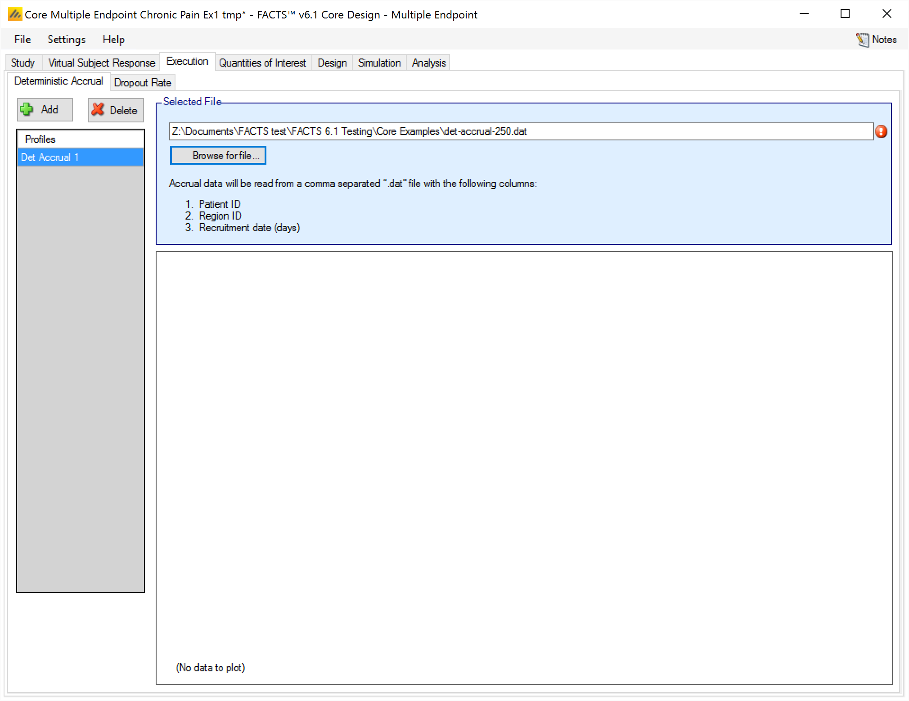
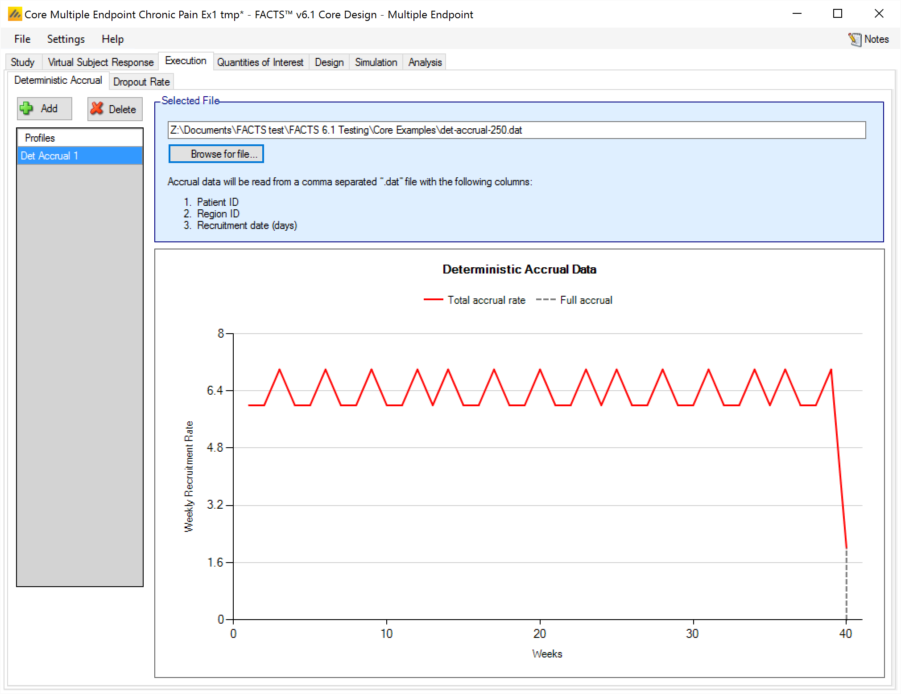
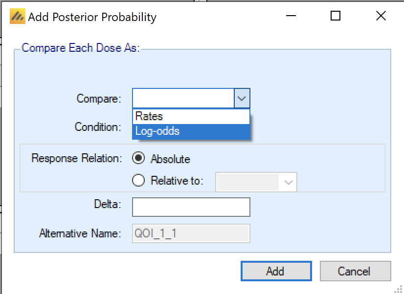
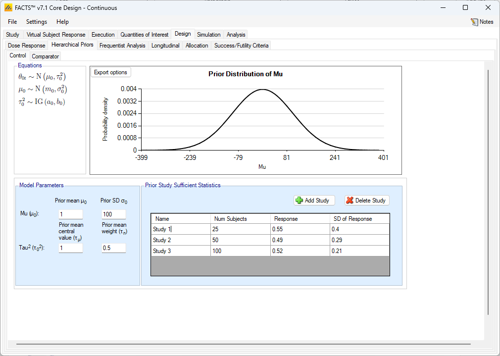
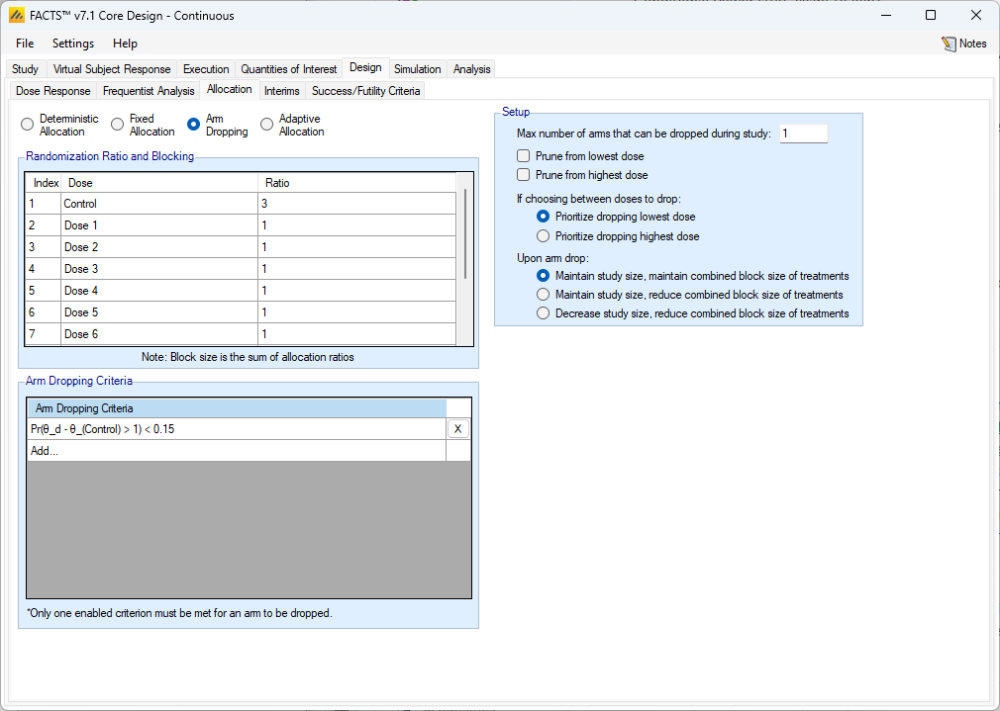
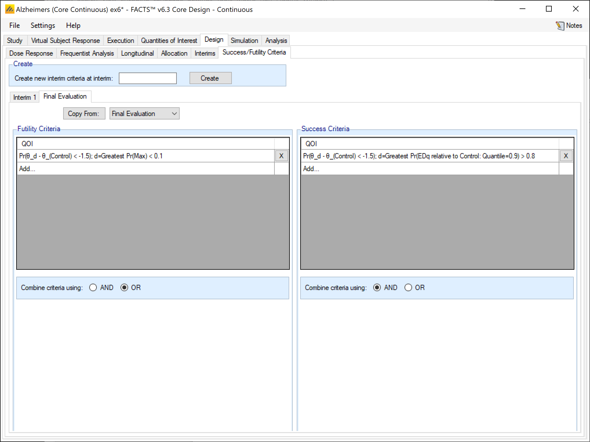

FACTS Core User Guide
All Endpoints: Quantities of Interest and Design options.
1 Table of Contents
1 Introduction [6](#introduction)
1.1 Purpose of this document [6](#purpose-of-this-document)
1.2 Scope of this document [6](#scope-of-this-document)
1.3 Context of this Issue [6](#context-of-this-issue)
1.4 Citing FACTS [6](#citing-facts)
1.5 Definition of Terms [7](#definition-of-terms)
1.6 References: [9](#references)
2 FACTS Core Overview [9](#facts-core-overview)
2.1 FACTS 7.0 Changes to FACTS Core [10](#facts-7.1-changes-to-facts-core)
3 Simulating Virtual Subjects [11](#simulating-virtual-subjects)
3.1 Subject Responses [11](#subject-responses)
3.2.1 Deterministic Accrual [13](#deterministic-accrual)
3.3 Drop-out Rates [14](#drop-out-rates)
4 Quantities of Interest (QOI) [15](#quantities-of-interest-qoi)
4.1 Posterior Probabilities [17](#posterior-probabilities)
4.1.1 Notes on setting Delta’s [17](#notes-on-setting-deltas)
4.1.2 P-value Delta’s [18](#p-value-deltas)
4.2 Predictive Probabilities [19](#predictive-probabilities)
4.2.1 Bayesian predictive probabilites [19](#bayesian-predictive-probabilities)
4.2.2 Conditional Power [22](#conditional-power)
4.3.1 P-values when there is no control arm [25](#p-values-when-there-is-no-control-arm)
4.3.2 Fisher-Exact Test [25](#fisher-exact-test)
4.4 Target Doses [26](#target-doses)
4.5 Decision Quantities [27](#decision-quantities)
4.6 Standard Evaluation Variables [28](#standard-evaluation-variables)
5 Design Overview [30](#design-overview)
5.1 Evaluation of Bayesian Posterior Estimates [30](#evaluation-of-bayesian-posterior-estimates)
6 Dose Response [31](#dose-response)
6.1 Continuous, Dichotomous and Log-Odds [31](#continuous-dichotomous-and-log-odds)
6.2 Descriptions of Dose Response Models [32](#descriptions-of-dose-response-models)
6.2.1 Independent Dose Model [32](#independent-dose-model)
6.2.3 Simple NDLM [33](#simple-ndlm)
6.2.4 Monotonic NDLM [34](#monotonic-ndlm)
6.2.5 Second Order NDLM [35](#second-order-ndlm)
6.2.6 3-Parameter Logistic [36](#parameter-logistic)
6.2.7 Hierarchical Logistic [37](#hierarchical-logistic)
6.2.8 Sigmoid Model [39](#sigmoid-model)
6.2.9 U-Shaped Model [40](#u-shaped-model)
6.2.10 Plateau Model [42](#plateau-model)
6.2.11 3 Parameter Exp Logistic (Dichotomous Only) [43](#parameter-exp-logistic-dichotomous-only)
6.2.12 Hierarchical Model [44](#hierarchical-model)
6.2.13 Linear Model [45](#linear-model)
6.2.14 Hierarchical Linear Model [45](#hierarchical-linear-model)
6.3 2D Treatment Dose Response Models [46](#d-treatment-dose-response-models)
6.3.1 2D Continuous Factorial Model [46](#d-continuous-factorial-model)
6.3.2 2D Discrete Factorial Model [47](#d-discrete-factorial-model)
6.4 Baseline Adjusted Model (Continuous Only) [50](#baseline-adjusted-model-continuous-only)
6.5 Control and Comparator Priors [51](#control-and-comparator-priors)
6.6 Inverse-gamma priors [52](#inverse-gamma-priors)
6.7 Handling Missing Data [53](#handling-missing-data)
6.7.1 Time-to-Event Missingness [53](#time-to-event-missingness)
6.8 Bayesian Baseline Adjusted Model [53](#bayesian-baseline-adjusted-model)
7 Augmented Priors (Historical Prior) [54](#augmented-priors-historical-prior)
7.1 Continuous Endpoints [55](#continuous-endpoints)
7.2 Dichotomous Endpoints [55](#dichotomous-endpoints)
7.3 Time-to-Event Endpoints [55](#time-to-event-endpoints)
7.5 BAC Example: [56](#bac-example)
8 Frequentist Analysis [57](#frequentist-analysis)
8.1 Continuous Endpoints [58](#continuous-endpoints-1)
8.2 Dichotomous Endpoints [59](#dichotomous-endpoints-1)
8.3 Time-to-Event Frequentist Analysis [60](#time-to-event-frequentist-analysis)
9 Longitudinal Modelling [60](#longitudinal-modelling)
9.1 Imputation [60](#imputation)
9.2 How many longitudinal models? [62](#how-many-longitudinal-models)
9.3.1 LOCF (Last Observation Carried Forward) [63](#locf-last-observation-carried-forward)
9.3.2 Linear Regression [63](#linear-regression)
9.3.3 Time Course Hierarchical [64](#time-course-hierarchical)
9.3.4 Kernel Density [65](#kernel-density)
9.4.1 LOCF (Last Observation Carried Forward) [67](#locf-last-observation-carried-forward-1)
9.4.2 Beta Binomial [68](#beta-binomial)
9.4.3 Logistic regression [68](#logistic-regression)
9.5 Time-to-Event Predictor Models [69](#time-to-event-predictor-models)
10 Allocation [70](#allocation)
10.1 Non-adaptive designs [71](#non-adaptive-designs)
10.2 Fixed Allocation [71](#fixed-allocation)
10.3 Arm Dropping [72](#arm-dropping)
10.4 Adaptive Allocation [74](#adaptive-allocation)
10.4.2 Adaptive Allocation Calculation Examples [77](#adaptive-allocation-calculation-examples)
10.5 Cohort recruitment – fixed allocation [79](#deterministic-allocation)
10.6 Cohort recruitment – adaptive allocation [80](#cohort-recruitment-adaptive-allocation)
10.7 Cohort recruitment – allocate to best dose [80](#cohort-recruitment-allocate-to-best-dose)
11.1 Continuous and Dichotomous Endpoints [82](#continuous-and-dichotomous-endpoints)
11.2 Time-to-Event Endpoint [83](#time-to-event-endpoint)
11.3 Follow-up [83](#follow-up)
12 Success/Futility Criteria [83](#successfutility-criteria)
12.1 Interim Analysis Criteria [83](#interim-analysis-criteria)
12.2 Final Evaluation Criteria [85](#final-evaluation-criteria)
13 Trial States [86](#trial-states)
13.1 State descriptions [86](#state-descriptions)
13.2 Analysis trigger events [87](#analysis-trigger-events)
2 Introduction
2.1 Purpose of this document
This document describes how to use the ‘Quantities of Interest’ and ‘Design’ options that are common across the FACTS Core design engines. It is intended for all end users of the system.
2.2 Scope of this document
This document covers the design options that are common across the four FACTS Core Design Engines: Continuous, Dichotomous, Time-to-Event and Multiple Endpoint. Design elements that are unique to a particular engine (primarily data simulation and simulation output) are covered in the endpoint specific Core Engine User Guide.
This document does not address the use of FACTS Enrichment Designs, Dose Escalation, or Platform Trials, which have separate User Guides.
The screenshots provided are specific to a particular installation and may not reflect the exact layout of the information seen by any particular user. They were taken from FACTS V7 & V6[1] installed on Windows 10 or 11. If FACTS is installed on different versions of Windows, or with different Windows ‘themes’ there will be some differences in appearance introduced by Windows. The contents of each tab, however, will still be consistent with the screenshots in this document.
2.3 Context of this Issue
This is the version of the user guide for inclusion with the FACTS 7.1 release.
2.4 Citing FACTS
If writing in LaTex and using Bibtex, if you wish to cite FACTS (thank you!), can we suggest the following:
(techreport?){FACTS71,
author = {{FACTS Development Team}},
title = {{FACTS}: Fixed and Adaptive Clinical Trial Simulator},
year = {2024},
month = {03},
number = {Version 7.1},
type = {Computer Software},
institution = {Berry Consultants LLC},
address = {Austin, TX},
note = {https://www.berryconsultants.com/software/facts/}
}
This will result in a reference that, for example in the APA style, will look like the following:
FACTS Development Team (2024). FACTS: Fixed and adaptive clinical trial simulator. Computer Software Version 7.1, Berry Consultants LLC, Austin, TX. https://www.berryconsultants.com/software/facts/.
2.5 Definition of Terms
The following acronyms and abbreviations are used in this document.
Active Comparator A treatment arm where subjects are treated with some existing therapy which the user either wishes to compare the novel treatment to (in addition to control), or wishes to use to check that the study has been properly designed to show a difference from control.
Baseline The subject’s baseline is their endpoint value before treatment on the trial is started. In FACTS the subject’s baseline is measured at their first visit, any prior visits (e.g. for screening to see if the patient is eligible for the trial) are not included in the simulation.
Cap A limit on the number of subjects recruited. In FACTS users can specify a cap on the overall number of subjects to be recruited in the trial (the ‘Overall Cap’) but through the use of early stopping rules the actual number recruited may be less, depending on the data observed.
Control Is the treatment arm with which the novel treatment(s) are principally being compared. Control may be placebo, or some existing standard of care, or therapy, against which the novel treatment has to be benchmarked in order to determine its likely usefulness.
Core FACTS Core: A mode of FACTS for designing trials where multiple treatments, (possibly different doses of a novel treatment) are tested against a control and optionally an active comparator.
CRM Continual Reassessment Method – a dose escalation design where the dose-toxicity is estimated using a simple Bayesian model, and the resulting estimates used to control the dose escalation and estimate the Maximum Tolerated Dose (MTD).
DE Dose Escalation: a mode of FACTS where subjects are treated in cohorts and dose escalation is determined by the number of toxicities observed.
ED Enrichment Designs: a mode of FACTS for designing trials where the same treatment is tested in different settings, for example different sub-populations or different but related indications.
Dose Response Model This is a model used in the statistical analysis of the final response as a function of the treatment dose. FACTS includes both parametric and non-parametric models including ‘no model’.
Endpoint An endpoint is a measure of the subject’s health that is being analyzed in order to learn about the effects of the treatments being studied in the trial.
FACTS Fixed and Adaptive Clinical Trial Simulator
Final Endpoint The final value, or state, of a subject’s endpoint.
Group The very neutral term ‘groups’ is used in ED, because the ED design could be used in a number of different settings. The groups could be for instance different patient sub-populations with the same disease, different disease sub-populations such as different sarcoma types, or even different but related diseases that the same treatment might be effective against (migraine, dental pain and post-operative pain for instance). The key characteristic is that there is a need to study each independently (with their own control) but also look across the different groups for some purpose – this might be for analysis where there is an expectation of commonality in response on control, or in the difference from control on the treatment arms; or operationally where there is limited budget, drug supply or time across the groups; or for the purposes of decision making – where the treatment has to be successful in more than one group to be worth considering for further development.
GUI Graphical User Interface, the part of the FACTS application that the user interacts with.
Historic Control A ‘historic control’ is where no control arm is included in the study, and the response on the arms where the novel treatment administered is compared to data from control arms from other already complete studies.
Imputation When the Bayesian statistical models are fitted to the simulated data within FACTS, if longitudinal modeling has been included, then multiple imputation is used for missing subject final endpoint values, whether missing due to the subject having dropped out or their final visit simply not occurred yet. The value is separately sampled at each iteration of the MCMC, from the posterior distribution of the longitudinal model, given the subject’s interim endpoint values.
Interim Visit A visit between the baseline visit and final visit, at which a subject’s endpoints are measured.
Intermediate Endpoint The value of a subject’s endpoint at a visit after their baseline visit, but before their final visit. Intermediate endpoint values can be used to estimate, using a longitudinal model, what the subject’s final endpoint will be (or would have been) thus providing additional information for analysis. Multiple imputation is used ensure that these estimated responses are included in the analysis with the correct weighting.
Longitudinal Model An analysis model that models the relationship between a subject’s interim endpoint values and their final endpoint value, that can be used to impute their final endpoint value when it is not available.
Method In the FACTS documentation we try to reserve the term ‘method’ for the algorithms used in the simulation (as opposed to the analysis) part of the program. In the analysis part we use the term ‘Model’, see below.
Model In the FACTS documentation we try to reserve the term ‘model’ for the statistical models used in the analysis of the trial data (in the ‘design’ section of the FACTS user interface). Where mathematical algorithms are used for other purposes in FACTS (for instance in the generation of the simulated data) we try to use the term ‘method’. We have found that initially it is very easy for users to be confused between these two parts of FACTS and we feel that using distinct terminology may help to reduce this.
Profile A profile is a specification of one aspect of a scenario. A scenario is made up of one profile of each of the required types for the type of trial being simulated. FACTS allows the user to specify multiple profiles of each type and then presents all the possible combinations of profiles as scenarios that can be used to drive simulations.
QOI
Quantity of Interest (QOI) A value to be calculated because it is of interest. The quantity may be of interest because it is to be used in an interim decision, to adapt allocation, for final evaluation, or to ensure it is value is written out in the FACTS results files for analysis outside of FACTS.
Response The change in a subject’s endpoint compared to their baseline state.
Scenario A scenario is the complete specification of the unknown external factors that determine the data observed on the trial and its timing. The exact factors depend on the type of trial being simulated but typically include:
the distribution of the final change from base line, or probability of response or rate of events in the different treatment groups,
the properties of subjects’ early responses and the correlation with their final outcome,
the rate at which subjects are recruited into the trial,
the rate at which subjects drop out of the trial.
SPEC The Design Engine Specification describes the system algorithms, and meaning of parameters.
Subject Someone recruited onto a clinical trial for the purposes of learning about the properties of a treatment. Depending on the type of trial they might be patients or they might be healthy volunteers.
Treatment Arm Subjects on entering the study are randomized to different ‘treatment arms’. Subjects randomized to the same arm receive the same treatment and the responses of the subjects in the arm analyzed to determine the expected response to that treatment, allowing the expected responses to the different treatments to be compared.
UG The User Guide, describes how to use the system.
2.6 References:
[Dunnett] Dunnett CW. A multiple comparison procedure for comparing several treatments with a control. Journal of the American Statistical Association 1955; 50: 1096–1121.
3 FACTS Core Overview
For an overview of the form entry and layout, see the User Guide for the Core Engine of the particular endpoint that you are using for your trial.
FACTS Core is for simulating trials where there are a number of related treatments being tested against a common control arm. Commonly, these different treatments will be different doses of the same drug and hence dose-response modelling is justifiable. If the treatments do not differ by dose but in some other way such as dosing frequency or treatment combination, then analysis can be by pairwise comparison with control, this is referred to as the ‘No model’ option.
FACTS provides numerous options for the statistical analysis, some of them straight forward, some of them quite novel, though all have been used in actual trials:
The endpoint can be continuous, dichotomous or time to event.
As well as a control arm, the study arms can be compared with an active comparator.
With either a dichotomous or continuous endpoint, longitudinal models can used to impute the patient’s likely final outcome from early interim measures. This can be used when final endpoint data is missing due to subject drop-out or at interims for subjects who’ve not reached their final endpoint yet.
Estimation of the response on the control arm can be augmented using a hierarchical model to borrow from data from previous studies (This is known as Bayesian Augmented Control, BAC).
Interims can be specified at fixed intervals by time, the number of subjects recruited or the number of events observed.
At interims, options include:
Choosing to stop the whole study for success or futility.
Dropping treatment arms
Adapting the randomization proportions to favor allocating to the doses that are most likely to be the desired target – which can be the study arm with the maximum response, the EDx, or minimum efficacious dose.
3.1 FACTS 7.1 Changes to FACTS Core
In FACTS 7.1 FACTS Core and FACTS Staged Design for all endpoints:
- There is a new Quantity of Interest: a frequentist Conditional Power, that can be calculated for the current trial or a specified future trial.
For Dichotomous endpoints only:
For p-value QOIs, users can now choose whether they should be derived using a normal approximation (this is the default option and was used in all previous versions of FACTS) or a Fisher’s exact test.
There is new Bayesian analysis model for dichotomous endpoints: “Beta-Binomial”, this is only available as an independent dose model, it cannot be combined with any dose response models.
3.2 FACTS 7.0 Changes to FACTS Core
In FACTS 7.0 FACTS Core and FACTS Staged Design:
FACTS Core Continuous, Dichotomous and Multiple Endpoint no longer hav a requirement that there at least two arms in a trial and can simulate single arm trials without requiring ‘fake’ control or second arms. Both Bayesian posterior probability and p-value QOI’s can be evaluated comparing against an absolute response.
A change that breaks backwards compatibility: FACTS used to be inconsistent in the time units it used for the patient accrual date using days (rather than weeks, which is the time unit used everywhere else). FACTS now outputs the patient accrual date in weeks and expects it to be input in weeks (see the analysis tab and deterministic accrual option).
3.3 FACTS 6.5 Changes to FACTS Core Design options
FACTS 6.5 Core:
In FACTS Core and Staged Continuous, Dichotomous and Multiple Endpoint there is a new option for p-value QOIs to be evaluated with a super-superiority or non-inferiority delta, and for current trial predictive probabilities the same delta is assumed for the prediction of success.
In FACTS Core and Staged Time-to-Event:
With a Time-to-Event predictor, the timing of interims can be governed by the number of predictor events observed.
With a Time-to-Event predictor the file termination can be governed by the number of predictor events observed.
With any predictor it is possible to disable the use of the predictor model to predict event times for those patients who have not yet observed an event. The Bayesian analysis of the two endpoints is thus completely de-coupled.
3.4 FACTS 6.4 Changes to FACTS Core Design options
FACTS 6.4 Core:
introduces three new models: the Hierarchical, Linear, and Hierarchical Linear models. The Linear model subsumes the 2-parameter logistic model for dichotomous data.
Adds options to dichotomous and time-to-event endpoints to allow posterior probability QOIs to be evaluated on the comparison of log-odds or hazard rate (as an alternative to pre-existing comparison of rates or hazard ratio)
3.5 FACTS 6.3 Changes to FACTS Core Design options
In FACTS 6.3 FACTS Core there are 3 new 2D dose response models – 2 factorial models and a 2D-NDLM response model.
3.6 FACTS 6.2 Changes to FACTS Core Design options
There were no changes to the Core Design options in DACTS 6.2.
3.7 FACTS 6.1 Changes to FACTS Core Design options
In FACTS 6.1 FACTS Core has the new feature of ‘design variants’ that allow the user to easily simulate and evaluate FACTS Core design at different sample sizes. This change doesn’t alter the design options – but it does make it much easier to explore the effect of the change of sample size on a design.
There are two additional changes concern frequentist calculations:
Better control over which frequentist analyses are computed and output. There is now no longer a need to ‘enable’ frequentist analysis; the user can just select which ones are required.
The ability to use p-values for early stopping decisions at interims – if there is too little final data to compute a p-value the values of ‘1’ is returned.
And there is one change that effects TTE QOIs (Quantities of Interest), it is now possible to specify Target QOIs that use the predictor endpoint in a TTE design.
4 Simulating Virtual Subjects
4.1 Subject Responses
The methods used to simulate subject responses vary by endpoint type. For each endpoint, the endpoint specific user guides provide information about simulating subject responses.
For simulating dichotomous responses see: FACTS Core Dichotomous User Guide
For simulating continuous responses see: FACTS Core Continuous User Guide
For simulating time to event responses see: FACTS Core Time-to-Event User Guide
For simulating multiple endpoint responses see the continuous or dichotomous user guide, depending on the type of endpoints used in the multiple endpoint study.
4.2 Accrual
The Accrual sub-tab provides an interface for specifying accrual profiles; these define the mean recruitment rate week by week during the trial. During the simulation, the simulator uses a Poisson process to simulate the random arrival of subjects with the specified mean accrual rate.
Accrual profiles are list on the left of the screen, as depicted below. These accrual profiles may be renamed by double-clicking on them, and typing a new profile name. After creating a profile, the user must create at least one recruitment region. Early in the trial design process, detailed simulation of the expected accrual pattern is typically not necessary and a single region with a simple mean accrual rate is sufficient.
To model more accurately the expected accrual rates over the trial, the user may specify multiple regions for each accrual profile and separately parameterize them. Regions are added via the table in the center of the screen (Figure 7‑1). Within this table, the user may modify:
the peak, mean weekly recruitment rate,
the start date (in weeks from the start of the trial) for this recruitment region,
whether the region will have a ramp up phase and if so when the ramp up will be complete (in weeks from the start of the trial).
Whether the region will have a ramp down, and if so when the ramp down start and when the ramp down will complete (in weeks from the start of the trial).
Ramp up/ramp down define simple linear increase/decreases in mean recruitment rate from the start to the end of the ramp. Note that simulation of accrual is probabilistic but ramp downs are defined in terms of time, so even if ramp downs are planned so that at the average accrual rate they will occur as the trial reaches cap, there is a risk in simulations when accrual has been slower than average, that ramp downs occur before the full sample size is reached. It is advisable to have at least one region that doesn’t ramp down to prevent simulations being unable to complete.
A graph of the recruitment rate of the highlighted region is shown as well. As the recruitment parameters are changed, the graph will update to show the time at which full accrual is reached. An accrual profile that does not reach full accrual is invalid and cannot be used to run simulations.

In the screenshot above you can see the two step ramp up in accrual from two regions – each starting at different offsets into the trial.
Note that the accrual profile graph is only the mean expectation; actual accrual is simulated using exponential distributions for the intervals between subjects, derived from the mean accrual profile specified here. Thus some simulated trials will recruit more quickly than this and some more slowly.
There are commands to import and export region details from/to simple external XML files. When importing, the regions defined in the external file are added to the regions already defined, they don’t replace them.
This is an example of a very simple region file defining just one region:
<?xml version=“1.0” encoding=“utf-8”?>
<regions>
<region>
<name>Region 1</name>
<rate>5</rate>
<start>0</start>
<ramp-up />
<ramp-down />
</region>
</regions>
4.2.1 Deterministic Accrual
If “Deterministic” accrual has been specified on the Study > Study Info tab, then on the Accrual tab, rather that specifying an accrual profile from which subject recruitment times are simulated, the user loads a file of specific accrual dates for every subject.

The user specifies a “.dat” file to load that contains the subject accrual dates in weeks[2] from the start of the trial.
The required file format is a text file with comma separate values. One row per subject, with 3 fields on each row:
the subject ID, (an integer)
the ID of the region where the subject was recruited (an integer)
and the subjects randomization date (in weeks from the start of the trial – this is a ‘real’ number allowing fractions of a week to be specified)
The file must contain sufficient entries to allow the maximum number of subjects specified on the Study > Study Info tab to be recruited.
After successfully loading a file, the FACTS GUI shows a plot of the resulting weekly accrual rate

4.3 Drop-out Rates
For the continuous and dichotomous engines, and the multiple endpoint engine, the default dropout scenario is that no subjects drop out of the study before observing their final endpoint data. If dropouts are expected, the user can specify either the “Dropouts per Dose,” or “Dropouts per Dose per Visit.”
If “Dropouts per Dose” is selected, then each subject has a probability of not having an observable final endpoint value equal to the dropout rate of the dose that subject is randomized to. If each subject has multiple visits and “Dropouts per Dose” is selected, then the conditional probability of dropping out before each visit given that the subject had not dropped out up to the visit before rates are all equal. In other words, if the total dropout rate is πD, the probability of dropping out between visits i and i + 1 given that the subject had not dropped out at visit i is \(1 - \left( 1 - \pi\_{D} \right)^{\frac{1}{V}}\) where V is the total number of visits.
If “Dropouts per Dose per Visit” is selected, then each subject has a user specified probability of dropping out before a visit v that is specified as the conditional probability of dropping out before visit v given that that they had not dropped out by visit v − 1. This leads to a total dropout rate πD for a participant that is equal to:
\[\pi\_{D} = 1 - \prod\_{v = 0}^{V}{(1 - \pi\_{v})}\]
5 Quantities of Interest (QOI)
The quantities of interest tab allows the user to specify the Bayesian posterior probabilities and Frequentist p-values to be calculated and reported in the simulation results and available for use in early stopping decisions, trial adaptations and final evaluation.
There are 3 classes of QOI
A probability calculated independently for each dose, there are 3 types of comparison:
The posterior probability that the estimate of the response of the subjects on that dose is better/worse than an absolute value or the estimate of response of the subjects on a reference dose, such as Control.
The predictive probability of success (achieving frequentist statistical significance) in the current trial or a future trial comparing the estimate of response on the dose against that on the Control arm.
P-values for each dose comparing the estimate of response on that dose against that on the Control arm.
Probabilities calculated across the doses for which dose is most likely to satisfy a specified target dose criteria – that is the dose with the maximum effect, that it is the minimum dose that achieves some minimum success in the estimate of response of the subjects on that dose, that it is the EDq – the dose that achieves some proportion of the overall maximum dose response.
A decision quantity – which is the value of a comparison probability for a specific target dose. For instance the probability that the response on the MED is better than that of the Active Comparator.
Decisions are made on decision quantities and adaptation can be based on posterior probabilities, predictive probabilities and target probabilities.
Note that to create a QOI for early stopping or final evaluation decisions will usually involve using 3 QOIs:
The probability to be tested e.g. the probability of being better than the Control by a clinically significant difference.
The target dose criteria for selecting the dose that is to be used in the test – e.g. the ED90.
The decision quantity that combines 1 & 2 – e.g. the probability that the ED90 is better than Control by a clinically significant difference.
There are a number of pre-defined, default QOIs which simplifies the specification of the most commonly used decision quantities, and the importation of past FACTS designs. These are:
Default Posterior Probabilities
The probability of being better than the control arm: “Pr(θ_d > θ_(Control))”, previously referred to as “Pr(θd – θ0)”, “Pr(Pbo)” and “Prob. Beats Ctrl” in earlier versions of FACTS.
The probability of being better than the control arm by a clinically significant difference “Pr(θ_d - θ_(Control) > nn)”, previously referred to as “Pr(θd – θ0>CSD)”, Pr(CSD) and “Prob. Beats CSD” in earlier versions of FACTS. The value for the “nn” is the CSD which is set in the “Standard Evaluation Variables” panel at the bottom of the QOI tab.
Default Predictive Probabilities
- The probability of success in a future trial “Pr(Succ. Future Trial): N=nnn, Sup/Noninf, α=n.nnn; δ=n”, previously referred to as Pr(S Phase III) and “Prob. Stat Sig” in earlier versions of FACTS”. The parameters for the future trial can be set by clicking on the QOI’s row in the table.
Default Target Doses
The probability for each dose that it is the dose with the maximum response, “Pr(Max)”, previously referred to as dmax and Ppn Max in earlier versions of FACTS. When used to select a dose in a decision quantity the label “… d= Greatest Pr(MAX)” is used.
The probability for each dose that it is the minimum dose that is better than Control by the specified CSD, “Pr(MED relative to Control: Delta = nn)”, previously referred to as “Ppn (MED)” in earlier versions of FACTS. The CSD used for comparison is specified in the Evaluation Variables panel at the bottom of the QOI tab. When used to select a dose in a decision quantity the label “d= Greatest Pr(MED relative to ControlActive Comparator: Delta = nn)” is used.
The minimum dose that gives a certain proportion of the maximum estimated response “pr(EDq relative to Control: Quantile=n.n)”, previously referred to as “dEDx” and “Ppn(EDx)” in earlier versions of FACTS. The Effective Dose quantile to use can be modified by the clicking on QOI’s row in the table. When used to select a dose in a decision quantity “… d=Greatest PR(EDq relative to Control: Quantile=n.n)” is used.
In each panel for each type of quantity, existing quantities can be deleted by clicking on the at the end of the corresponding row. Each quantity’s definition can be displayed and edited (only edited for the default QOIs) by clicking on the row displaying the quantity’s definition. A new quantity can be defined by clicking on the bottom row of the corresponding panel labelled “Add…”.
5.1 Posterior Probabilities
These are Bayesian quantities to be calculated at each interim and at the final analysis.

A Posterior Probability is specified as:
Compare:
Continuous: Means
Dichotomous: Rates or Log-odds
Time-to-Event: Hazard Ratio or Hazard Rates.
Condition: “>” or “<” a comparison value.
Relative to an absolute value or relative to the response on a specific dose.
The comparison can include a delta, which is the absolute value to be compared against if the comparison is absolute, or a value that the difference relative to the comparison arm is compared to.
The QOI will be given a “name” derived from these details and a short or Alternative name that will be used in the output files to allow easier access from other software, e.g. from within R.
If the endpoint is TTE and the design includes a predictor endpoint, then the definition of the QOI includes the specification of which endpoint it applies to.
5.1.1 Notes on setting Delta’s
In the three endpoints delta’s are defined as:
Continuous A CSD (Clinically Significant Difference) in the estimates of the mean response.
Dichotomous A CSD in the estimate of the response rates
Time-to-Event A CSHRD (Clinically Significant Hazard Ratio Difference) in the estimate of the Hazard Ratio
A “standard” hypothesis test for demonstrating superiority to control uses a delta of 0. Testing for superiority with a non-zero delta is different, and the implications need to be carefully understood[3]. Where the term CSD is used in this document, it should be taken to refer to CSHRD as well unless it is specifically stated otherwise.
When setting a target treatment difference from control for the study to beat, it is also common to require a degree of confidence that the target has been beaten. To achieve posterior probabilities of > 50% that the target has been beaten, the estimated mean difference will have to be greater than the target difference.
Thus, when setting a delta, we are setting up two hurdles the study drug must beat, first the delta and then on top of that an additional margin to give a > 50% confidence that the margin has been beaten. Thus, it is necessary to avoid setting the target delta too large. A common rookie error is to set the delta to the ‘expected difference’ (the value that might have been used in a conventional sample size calculation). In scenarios where the simulated response is equal to the ‘expected difference’ and hence the CSD this will give probabilities of being better than control by the delta of 50% on average, regardless of the sample size.
It is inadvisable to require a posterior probability of 50% or better than the response is better than the Control by the delta as this turns the test into one that simply depends on whether the point estimate of the response is better.
It is inadvisable to require posterior probability of less than 50% for success, as such criteria have the undesirable characteristic that they can be met in circumstances where it can be seen that if further data was gathered consistent with what has already been seen, it would lead the threshold no longer being met! The posterior distribution would shrink so that there was no longer sufficient of the tail above the CSD.
It is better therefore to use a delta that is less than the expected difference that it is hoped to achieve, somewhat like having a non-inferiority margin around the target. So, when the design is simulated with a response at the expected difference the target will be clearly exceeded. A useful default value to use for a delta is half the ‘expected difference’. This usually yields “comprehensible” probability thresholds for both success and futility.
Using a delta has benefits however – simply being better than control but for very small difference can be established simply by having large sample sizes. Being better than control by a delta establishes some confidence that there is some patient benefit. Use of a delta is also useful if otherwise success thresholds “well out in the tail” (e.g. > 0.99) are required such as the equivalent of an early look in a conservative Group Sequential design. Though the use of a delta does mean that there is a less direct equivalence to a p-value.
5.1.2 P-value Delta’s
Separately from the CSD/CSHRD delta, with a continuous or dichotomous endpoint (but not time-to-event), a frequentist super-superiority/non-inferiority delta can be specified.
These use the same selection of super-superiority/non-inferiority as the CSD

Currently, unlike the CSD delta that is only applied to the default posterior probability QOI and MED target QOI, the p-value delta is applied to all the p-value QOIs and it cannot be overridden.
The value of the p-value delta is constrained to be 0 or positive. The ‘direction’ of the delta depends then on the direction of the endpoint (whether “higher/lower is better” or “a response is a positive/negative outcome”.
| Higher is better / Response is positive | Lower is better / Response is negative | |
|---|---|---|
| Super-Superiority | Trt – Control > delta | Trt – Control < -delta |
| Non-inferiority | Trt – Control > -delta | Trt – Control < delta |
Figure 8‑1: Accrual
Sign of delta and direction of test
If no control arm is included p-values, with a continuous or dichotomous endpoint, the treatment response is compared to a fixed value:
Continuous – compared to a response of 0.
Dichotomous – compared to a rate of 0.5.
Now with p-value deltas the p-value QOIs (and current trial predictive probability QOIs) can be compared to any fixed value – by specifying a delta that combined with the default value (of 0 or 0..5) gives the absolute value that you want to compare to.
5.2 Predictive Probabilities
There are two types of predictive probabilities –
Bayesian predictive probabilities, which are Bayesian predictions of frequentist outcomes and take into account the uncertainty around a set of parameters,
and conditional power, which aims to calculate the frequentist probability of success assuming a set of parameters to be true.
The primary difference between the Bayesian predictive probabilities and the conditional power calculations is that the Bayesian predictive probabilities are calculated taking the variability around the estimated treatment effect into account, while the conditional power calculations assume that the observed test statistic of past data is the exact effect that future data will be generated from.
For both Bayesian predictive probabilities and conditional power, we differentiate two types, predicting the outcome in the current trial and predicting the outcome in a future trial.
5.2.1 Bayesian predictive probabilities
5.2.1.1 Current Trial Bayesian Predictive Probabilities
In the current trial, the outcome can be predicted under one of two assumptions:
That no new subjects are recruited, but all those who have been recruited are followed up until they are complete.
That the trial continues recruiting using the current allocation ratios until the trial maximum sample size is reached, and all subjects recruited are followed up until complete.
Predictive probabilities currently can only predict outcomes based on p-values. Note that since p-values are only calculated as comparisons against a control arm, predictive probabilities of success in the current trial are only available if the current trial includes a control arm.
The user specifies how missingness is handled in the final analysis, the p-value test type – unadjusted, Bonferroni or Dunnett’s and the (one sided) alpha level for the significance test. The QOI assumes that the specified default p-value delta is used in the final test.
The predictive probability of the current trial at the maximum sample size is only available:
- If the allocation is either fixed, or fixed with arm dropping, but not adaptive allocation.
The predictive probability is calculated by simulating the remaining subjects, assuming their allocated at the current probabilities of allocation and simulating their final response based on the rate of response or (Normal) distribution of responses observed so far for each arm.
Ignoring the possibility of the trial stopping or dropping an arm at a future interim
Ignoring the possibility of future subject drop-outs.
There is one simulation of the remaining data per MCMC loop, potentially significantly increasing the time to perform the overall simulation of the trial.
If there is no data available on the arms involved in the Bayesian predictive probability calculation, FACTS will still perform the simulation of future subject outcomes based on posterior distribution. The posterior distribution for the arms with no available data will be the same as the user specified prior distribution.
5.2.1.2 Current Trial Bayesian Predictive Probabilities – Time-to-Event
Unlike the Continuous and Dichotomous endpoints, to predict the probability of success at full enrolment with a Time-to-Event endpoint, it is also necessary to simulate the accrual rate (and hence how many events might be observed).

For TTE, for a Predictive Probability of Success at Full Enrolment, there are new parameters to determine how accrual is modelled. There are 3 models for accrual
Fixed Rate, the parameters for this are:
- The fixed (mean) accrual rate per week to simulate.
Estimated from the Last ‘W’ Weeks accrual data, using a Poisson distribution, with a Gamma prior. The parameters for this are
The number of past weeks W to use the accrual data from.
The prior mean for the model of the accrual rate
The weight of the prior
Estimated from all the accrual data from the start of the trial, using a Poisson distribution, with a Gamma prior, the parameters for this are:
The prior mean for the model of the accrual rate
The weight of the prior
5.2.1.3 Future Trial Bayesian Predictive Probabilities
For predictive probabilities for a future trial, a predictive probability of success in a subsequent phase 3 trial is estimated during the current trial. The probability of success in phase 3 is calculated for each study arm, based on the specification of the phase 3 trial given here of:
whether the aim is to show superiority or non-inferiority,
the sample size per arm,
the required one-sided alpha,
and the super-superiority margin or non-inferiority margin (if any).
Given these criteria, FACTS calculates the predicted probability of success of the subsequent trial for that endpoint assuming the estimate of the response on that endpoint, integrated over the uncertainty in those estimates. The conventional expected power of the specified future trial is calculated for the treatment effect in each MCMC sample and then averaged. This predicted probability of success can then be used in the stopping criteria and final evaluation criteria for the current trial.
This QOI is an extension of the “probability of success in phase 3” in earlier versions of FACTS – the difference now is that multiple different possible future trials can be specified in different QOIs and used for different decisions.

This predictive probability has the following parameters that must be specified:
Whether the future trial will be for Superiority or Non-inferiority.
The size of the future trial in terms of the number of subjects on each arm.
The (one sided) alpha level that will be used to determine the significance of the trial.
The Super-superiority margin (if any) or the non-inferiority margin. The default p-value delta is not used for this QOI it is specified as part of the QOI and can be different from the default.
As with all QOIs the QIO will be given an alternative shorter name that can be used when accessing the output files from other software such as R.
If there is no data available on the arms involved in the Bayesian predictive probability calculation, FACTS will still calculate the predictive probability of the future trial being a success based on the estimated posterior distribution. The posterior distribution for the arms with no available data will be the same as the user specified prior distribution.
5.2.2 Conditional Power
Conditional power is currently available for Continuous and Dichotomous endpoints in Core and Staged Designs.
When creating a Conditional Power QOI, the first specification that must be made is whether the conditional power should be calculated for the current trial or for a hypothetical future trial. The two selections are fundamentally different.
The Current Trial conditional power takes the information collected in the trial so far, and assumes that for the remainder of the current trial the data collected has an effect equal to the point estimate of the already collected data. The previously collected trial data is then combined with hypothetical future data and weighted based on the amount of information that has been and will be observed by the end of the trial. The result is the probability that the current trial will reject the null hypothesis at a provided alpha level under the assumption that the future patients are generated from a population having a treatment effect exactly equal to the past data’s test statistic.
The Future Trial conditional power also uses the information accrued in the trial so far to calculate the assumed treatment effect moving forward, but assumes that a new study would be started that does not use the data from the current trial in its analysis. The new study is assumed to be a 1:1 randomized study if there is a control arm, and a single arm study if no control, with a sample size per arm, objective, and alpha level specified at the time of QOI creation.
If a conditional power is ever calculated for an arm with no final response data or against a control arm with no final response data, the conditional power will be called missing (-9999 in FACTS).
5.2.2.1 Current Trial Conditional Power
When creating a current trial conditional power, the missingness strategy, multiplicity adjustment, final sample size, and alpha level for the significance test must be specified.

Handle missingness using:
Missingness handling for a continuous endpoint can be specified as:
Ignore: subjects that are known dropouts are not included in the current or final sample size, and are not used to estimate the treatment effect.
Last Observation Carried Forward (LOCF): subjects that are known dropouts have their last observed endpoint value assumed to be their final endpoint. Subjects with no early observed data are ignored. Subjects that have data to carry forward are considered complete, and are used to estimate the current treatment effect.
Baseline Observation Carried Forward (BOCF): subjects that are known dropouts have their baseline value assumed to be their final endpoint. They are included in the current information as complete subjects and are used to estimate the current treatment effect. BOCF is only available for the continuous endpoint and when simulating baseline for subjects.
Failure: subjects that are known dropouts are assumed to have a negative outcome at their final visit. If responses are good, the subject is a non-response, and if responses are bad, the subject is a responder. Failure is only available for dichotomous endpoints.
Test Type
The test type can either be Unadjusted or Bonferroni. An unadjusted test will always use the specified alpha level in the significance test. The Bonferroni adjustment will divide the specified alpha value by the number of non-control arms enrolling in the study in the enrolment period leading up to the current analysis time.
Sample Size:
The current trial conditional power can be calculated at two different future time points.
Current Enrollment: That no new subjects are recruited, but all those who have been recruited are followed up until they are complete.
Trial Maximum: That the trial would continue recruiting subjects using the current allocation ratios until the trial maximum sample size is reached, and all subjects recruited are followed up until they have the opportunity to complete.
One-sided Alpha
The threshold that the current trial would have to be less than in order to be considered a success. The success/futility values specified in the design tab are not used in the conditional power calculation. This value may be adjusted by the “Test type:” input.
Super-Superiority (Non-inferiority) margin for p-value:
This value cannot be changed on the QOI pop-up. It’s instead modified at the bottom of the QOI page. The objective of the current trial cannot be different for each individual current trial conditional power QOIs.
Additional Notes
Currently, conditional power will always assume that there is no correction applied to combine the different p-values from the analysis timepoints, i.e. no combination test is used.
The conditional power of the current trial at the maximum sample size is only available if the allocation is either fixed, or fixed with arm dropping, but not adaptive allocation or deterministic allocation.
Conditional power for the current trial is calculated
- Ignoring the possibility of the trial stopping or dropping an arm at a future interim
- Ignoring the possibility of future subject drop-outs.
5.2.2.2 Future Trial Conditional Power
Conditional power of a future trial is reduced to a power calculation for a future trial, given the current frequentist estimates of treatment effect and standard deviation and a set of assumptions for the future trial, such as sample sizes, hypothesis to be tested, and significance levels to be used.
The test type of the future trial can be set to Superiority or Non-inferiority. If the superiority or non-inferiority margin is set to 0, then both types of tests simplify to traditional tests of superiority with no margin. If a non-zero margin is set, then the future trial must meet the success criteria indicated by the test type and the margin. The margin cannot be negative, but a super superiority test with a margin of -0.5 is equivalent to a non-inferiority test with a margin of 0.5.
The subjects per arm dictates how many subjects would be enrolled on each arm in the future study. If there is a control arm in the current trial, then the future trial is assumed to be randomized 1:1 between the active arm and the control. If there is no control arm in the current study, then the future trial is a single arm trial testing against the performance goal specified in the Freq. Comparison Response box in the QOI creation pop-up.
The One-sided Alpha is the significance level of the final analysis test of the future trial. The future trial is assumed to have 1 active arm, so there are no adjustments to the alpha level available.
The superiority margin or non-inferiority margin indicate the amount that the active arm must be better/not worse than the control arm by. If there is no control arm then this is the Freq Comparison response, which is the value that the active arms must be significantly better than in order to be declared a success. The frequentist margin for p-value QOIs on the QOI tab is not used for Future conditional power calculations – the future trial can have a different objective than the current trial.

5.2.2.3 Technical Aspects of Conditional Power Calculations
The conditional power calculations in FACTS are all calculated similarly to Jennison and Turnbull (2000)[4].
For continuous endpoint conditional power calculations, the conditional power of the future trial is calculated using a pooled standard deviation from all arms. For dichotomous conditional power calculations, each arm has its own standard deviation based on the MLE estimate of its proportion. These decision result in the conditional power tests matching how simple p-values are calculated for continuous and dichotomous endpoints.
The following sections will provide formulae to calculate the conditional power in the case where there is a control arm. Simplifications for when the arm is being compared to a fixed value rather than a control arm are simple: information fractions are only a function of the active arm standard deviation and the test statistic does not have a second sample mean subtracted from the active arm.
The value of δ, which can be a non-inferiority margin or a super superiority margin, is always positive coming out of FACTS. To make the math more concise we can define a couple of coefficients for the δ term that allow it to be used without re-writing formulas for different hypothesis test setups. If high values of the endpoint are good, then s1 = 1, and if low values of the endpoint are good, then s1 = −1. If the specified δ is a non-inferiority margin, then s2 = 1, and if it’s a super superiority margin then s2 = −1.
Continuous Conditional Power for the Current Trial
Let t be the interim index that the conditional power is being computed at, and T be the time of the analysis that the conditional power is being computed for. Then Zk is the test statistic of the data collected up to the current interim analysis in the study, Ik is the information level at the time of the interim analysis, and IK is the information level at the end of the study that the conditional power is being calculated for.
Let arm 1 be the control and arm 2 be the active arm, \(\overline{x\_{it}}\) be the sample mean of arm i at time t, \(\widehat{\sigma\_{i}^{2}}\) be the sample variance of arm i at time t, n*i**t be the number of subjects with complete known final data on arm i* at interim analysis t, and n*i**T be the number of subjects with complete known final data on arm i* at the time that conditional power is being calculated for. The pooled variance estimate is \(\widehat{\sigma^{2}} = \sum\_{d = 1}^{D}\widehat{\frac{\sigma\_{d}^{2}}{n\_{dt}}}\) where D is the total number of arms in the study.
Then,
\[I\_{t} = \left( \frac{\widehat{\sigma^{2}}}{n\_{1t}} + \widehat{\frac{\sigma^{2}}{n\_{2t}}} \right)^{- 1}\]
\[I\_{T} = \left( \frac{\widehat{\sigma^{2}}}{n\_{1T}} + \widehat{\frac{\sigma^{2}}{n\_{2T}}} \right)^{- 1}\]
\[Z\_{t} = \left( {\overline{x}}\_{2t} - {\overline{x}}\_{1t} + s\_{1}s\_{2}\delta \right)\sqrt{I\_{t}}\]
where δ is the non-inferiority or super superiority margin.
Then for a one-sided alpha level of α, let z1 − α be the critical value corresponding to α.
If high values of the endpoint are good, the conditional power of the current trial is:
\[CP\_{T} = \Phi\left( \frac{Z\_{t}\sqrt{I\_{t}} - z\_{1 - \alpha}\sqrt{I\_{T}} + ({\overline{x}}\_{2t} - {\overline{x}}\_{1t} + s\_{2}\delta)\left( I\_{T} - I\_{t} \right)}{\sqrt{I\_{T} - I\_{t}}} \right)\]
If low values of the endpoint are good, the conditional power of the current trial is:
\[CP\_{T} = \Phi\left( \frac{{- Z}\_{t}\sqrt{I\_{t}} - z\_{1 - \alpha}\sqrt{I\_{T}} - ({\overline{x}}\_{2t} - {\overline{x}}\_{1t} - s\_{2}\delta)\left( I\_{T} - I\_{t} \right)}{\sqrt{I\_{T} - I\_{t}}} \right)\]
Calculation of Continuous Conditional Power for a Future Trial
Most of the future trial conditional power calculation is the same as the above current trial conditional power. There are some simplifications.
\({\overline{x}}\_{it}\) and \(\widehat{\sigma\_{i}^{2}}\) are the same as in the current conditional power calculation. It, the weight of the current trial Z-score, is set to 0. IK is now the information at the end of the future trial, and is calculated as:
\[I\_{T} = \left( \frac{\widehat{\sigma^{2}}}{n\_{T}} + \widehat{\frac{\sigma^{2}}{n\_{T}}} \right)^{- 1}\]
where nT is the sample size per arm in the future trial and again σ̂2 is the pooled variance.
If high values of the endpoint are good, the conditional power of a future trial is:
\[CP\_{T} = \Phi\left( \frac{- z\_{1 - \alpha}\sqrt{I\_{T}} + ({\overline{x}}\_{2t} - {\overline{x}}\_{1t} + s\_{2}\delta)\left( I\_{T} \right)}{\sqrt{I\_{T}}} \right)\]
If low values of the endpoint are good, the conditional power of a future trial is:
\[CP\_{T} = \Phi\left( \frac{- z\_{1 - \alpha}\sqrt{I\_{T}} - ({\overline{x}}\_{2t} - {\overline{x}}\_{1t} - s\_{2}\delta)\left( I\_{T} \right)}{\sqrt{I\_{T}}} \right)\]
Calculation of Dichotomous Conditional Power for the Current Trial
The dichotomous conditional power calculations are similar in spirit to the continuous conditional power calculations. One substantial difference is in how the dichotomous conditional power tests handle a non-inferiority or super superiority margin, δ. The method of calculating an appropriate test statistic for a frequentist hypothesis test is not obvious when the null scenario has a non-zero δ.
When there is no margin, the estimate for each treatment is simply based on the observed response proportion \(\widehat{p\_{i}}\) for arm i, and the test statistic for a comparison of the control arm, c, with dose d is the usual Wald test
\[Z\_{d} = \frac{\widehat{p\_{d}} - \widehat{p\_{c}}}{\sqrt{\frac{\widehat{p\_{d}}(1 - \widehat{p\_{d}})}{n\_{d}} + \frac{\widehat{p\_{c}}(1 - \widehat{p\_{c}})}{n\_{c}}}}\]
When there is a margin, FACTS uses the Farrington-Manning Likelihood Score test statistic to estimate quantities \(\widetilde{p\_{d}}\) and \(\widetilde{p\_{c}}\) based on the MLEs of the arm proportions governed by the constraint that \(\widetilde{p\_{d}} - \widetilde{p\_{c}} = - s\_{1}s\_{2}\delta\). These constrained MLE estimates are used in the standard error of the test statistic. The FM test statistic is then,
\[Z\_{FM,d} = \frac{\widehat{p\_{d}} - \widehat{p\_{c}} + s\_{1}s\_{2}\delta}{\sqrt{\frac{\widetilde{p\_{d}}(1 - \widetilde{p\_{d}})}{n\_{d}} + \frac{\widetilde{p\_{c}}(1 - \widetilde{p\_{c}})}{n\_{c}}}}\]
See the PASS documentation[5] or SAS documentation[6] for a complete description of the calculations that go into the FM test. In the SAS documentation, note that the FM test is the same as the Miettinen-Nurminen test without including the \(\frac{n}{n - 1}\) variance correction. The FM test was used rather than the MN test because as δ → 0, the FM test converges to the simple Wald test.
Once the test statistic has been resolved, the dichotomous conditional power for the current trial is calculated as follows. For calculating the conditional power for arm 2 compared to the control arm, called arm 1 without loss of generality, let It be the current information amount and IT be the amount of information that the conditional power is being calculated for. Then,
\[I\_{t} = \left( \frac{\widetilde{p\_{1}}\left( 1 - \widetilde{p\_{1}} \right)}{n\_{1t}} + \frac{\widetilde{p\_{2}}\left( 1 - \widetilde{p\_{2}} \right)}{n\_{2t}} \right)^{- 1}\]
\[I\_{T} = \left( \frac{\widetilde{p\_{1}}\left( 1 - \widetilde{p\_{1}} \right)}{n\_{1T}} + \frac{\widetilde{p\_{2}}\left( 1 - \widetilde{p\_{2}} \right)}{n\_{2T}} \right)^{- 1}\]
\[Z\_{t} = \left( \widehat{p\_{2}} - \widehat{p\_{1}} + s\_{1}s\_{2}\delta \right)\*\sqrt{I\_{t}}\]
where δ is the super superiority or non-inferiority margin, and n1t and n2t are current number of completers on the control and active arm, and n1T and n2T are the number of completers that will be on the control and active arm at time that the conditional power is being calculated for. Additionally, if there is no non-inferiority or super superiority margin δ, then all \(\widetilde{p\_{\*}}\) values are equal to their corresponding \(\widehat{p\_{\*}}\) values.
For a one-sided alpha level of α, let z1 − α be the critical value corresponding to α.
If high values of the endpoint are good, the conditional power of the current trial is:
\[CP\_{T} = \Phi\left( \frac{Z\_{t}\sqrt{I\_{t}} - z\_{1 - \alpha}\sqrt{I\_{T}} + (\widehat{p\_{2}} - \widehat{p\_{1}} + s\_{2}\delta)\left( I\_{T} - I\_{t} \right)}{\sqrt{I\_{T} - I\_{t}}} \right)\]
If low values of the endpoint are good, the conditional power of the current trial is:
\[CP\_{T} = \Phi\left( \frac{{- Z}\_{t}\sqrt{I\_{t}} - z\_{1 - \alpha}\sqrt{I\_{T}} - (\widehat{p\_{2}} - \widehat{p\_{1}} - s\_{2}\delta)\left( I\_{T} - I\_{t} \right)}{\sqrt{I\_{T} - I\_{t}}} \right)\]
Calculation of Dichotomous Conditional Power for a Future Trial
Most of the calculation quantities for the future trial conditional power are the same as the current trial conditional power. The only difference is that for the future trial conditional power we discard the influence of the current trial test statistic on the final analysis, so It = 0. Then the conditional power calculations become:
If high values of the endpoint are good, the conditional power of the current trial is:
\[CP\_{T} = \Phi\left( \frac{- z\_{1 - \alpha}\sqrt{I\_{T}} + (\widehat{p\_{2}} - \widehat{p\_{1}} + s\_{2}\delta)\left( I\_{T} \right)}{\sqrt{I\_{T}}} \right)\]
If low values of the endpoint are good, the conditional power of the current trial is:
\[CP\_{T} = \Phi\left( \frac{- z\_{1 - \alpha}\sqrt{I\_{T}} - (\widehat{p\_{2}} - \widehat{p\_{1}} - s\_{2}\delta)\left( I\_{T} \right)}{\sqrt{I\_{T}}} \right)\]
5.3 P-values
A p-value QOI simply allows the user to specify which test type to be used (unadjusted, Bonferroni, Dunnett’s or Trend Test), and how missing data is to be handled (ignored, LOCF or BOCF – if baseline is being simulated). If a control arm is present, P-values are comparisons against the control arm, if there is no control arm present, p-value QOIs are comparisons against a fixed response or fixed rate that is specified at the bottom of the QOI tab (it cannot be set differently for separate QOIs).
Note that for dichotomous endpoints p-value are calculated using the Test of Proportions, this test statistic asymptotically approaches a normal distribution and at least 5 success and 5 failures should be observed for this to be reasonable.
The p-values are calculated including the default frequentist delta that has been specified at the bottom of the screen. They cannot be modified as part of QOI, the value of the delta and nature of the test is the same for all the p-value QOIs.
In a TTE design with a predictor the p-values are only calculated for the final event endpoint, not the predictor.
5.3.1 P-values when there is no control arm
If there is no control arm (not currently an option in Time-to-Event), the p-value delta is instead interpreted as the objective response or response rate to compare to. The option to set the trial type is also disabled (“Superiority” is selected and the “non-inferiority option is greyed out). For a non-inferiority trial comparing to an objective response or response rate simply use the objective rate minus the non-inferiority delta (if a higher response is better) or the objective rate plus the non-inferiority delta (if a lower response is better).
It is currently only possible to have one objective rate to compare against.
The same objective rate will be used for the target p-value test in the predictive probabilities.

5.3.2 Fisher-Exact Test
On the bottom of the QOI tab, we can specify what statistical test to use when calculating p-values. Options are “Normal approximation” (default) and “Fisher exact test”. “Normal approximation” uses a t-test and should yield similar results to a Chi-Square test without continuity correction, while “Fisher exact test” uses an exact Fisher’s exact test for 2x2 tables.
If “Fisher exact test” is chosen as the test type, all p-value QOIs will use a Fisher’s exact test, except for future trial predictive probabilities, which will still use a t-test.
If “Fisher exact test” is chosen as the test type, only “Bonferroni” and “Unadjusted” are available as multiplicity corrections and any QOIs previously created using different multiplicity corrections will be deleted.
“Fisher exact test” is not available for non-inferiority comparisons.

5.4 Target Doses
The target dose QOIs are Bayesian posterior probabilities based on MCMC sampling of how often each dose meets the specified target criteria. There are 3 types of target specifiable
Max – the dose with the maximum response, this has no parameters to specify, so is available as a pre-defined default QOI.
MED – a Minimum Effective Dose, the lowest dose that has a response better than an absolute or relative target.
ED – an effective dose, the dose that achieves a specified proportion (quantile) of the maximum improvement in response relative to an absolute value or the performance of a specific treatment arm.

A Target dose posterior probability is specified as:
MED or EDq.
Relative to an absolute value or relative to the response on a Control or the Active Comparator.
The delta the MED must be better than, or the quantile of the effective dose.
If the endpoint is TTE and the design includes a predictor, then the definition of the QOI includes selecting which endpoint the QOI refers to.
The QOI will be given a name derived from these details, and alternative simpler name that can be used when accessing the output files from other software such as R.
5.5 Decision Quantities
The QOI’s so far have defined values to be calculated across all the doses. For a Success / Futility decision to be taken, as well as the quantity to be tested, it is necessary to specify the treatment arm whose value is to be used. This selection can be by specifying a specific arm, but normally it is specified by using a “Probability of being Target” selection criteria. A simple and common example is “The probability of the response being better than that of the Control of the Treatment arm with the maximum response”:


A decision QOI consists of (1) a QOI that has been calculated for each dose, and (2) at Target Dose QOI. The dose with the highest probability of being the target dose is selected and the value of the “per dose” QOI for that dose is the value used in the decision.
For example, evaluating a decision QOI that is the combination of
The probability of being better than Control by 2 points (Pr(θd – θ0 > 2))
with the target dose EDq relative to control; Quantile 0.9
is the probability that the response of the ED90 is better than control by 2 points.
Instead of a Target Dose QOI, it is also possible to specify a specific dose, or to use the terms “Max probability over all doses” and “Min probability over all doses” which mean that the dose with the minimum or maximum value of the per dose QOI is used. This enables:
Decisions QOIs testing specific doses, for example by defining a Posterior probability QOI that compares all doses against the lowest dose, and then a Decision QOI using that posterior probability with the highest dose selected as the target dose it is possible to based decisions on the posterior probability that the highest dose is better than the lowest dose.
A Decision QOI using “Max …” allows a decision to be based on whether a probability or p-value is greater than a threshold at any dose, or less than a threshold at all doses.
A Decision QOI using “Min …” allows a decision to be based on whether a probability or p-value is less than a threshold for any dose or greater than a threshold at all doses.
There is one special case: if the QOI chosen is the Trend Test p-value, then because this is not actually a per-dose value, only one “Target dose” can be selected: “Overall Significance”.
5.6 Standard Evaluation Variables
These 2 parameters are used across some of the default QOIs and hence specified outside the normal QOI dialog boxes.
The CSD value
and whether absolute or relative to the Control arm
these are used in both the default “Pr(CSD)” and the “MED relative to Control” QOIs. 
Note that the CSD value here is designed to be usually entered as a positive value, as in earlier versions of FACTS. Its sign is automatically adjusted if “lower score means subject improvement” or if the trial is a non-inferiority trial.
These adjustments are not made for other user entered QOI, the directions of comparison both for the definition of the probability to be calculated and the comparison of the resulting probability with a threshold are under the user’s control as are whether delta’s are –ve or +ve. This allows the user to define QOI’s in whatever fashion is natural to them and the team.
When there is no custom and practice as to how an endpoint and associated probability are expressed and used, it is recommended that the usual practice should be to create probabilities that are large when they are ‘good’ and low when they are ‘bad’. So tests for success are usually “> threshold” and for futility are “< threshold”. Using this convention whenever it is does not feel unnatural will reduce confusion and the opportunity for mistakes.
5.6.1 The direction of comparison for default QOIs
Note that as a result of being able to specify whether a higher or lower response represents improvement, and whether the aim is superiority or non-inferiority, the CSD or the NIM will almost always be a positive value. FACTS will automatically determine which direction is appropriate (e.g. if lower values are subject improvement, the engine will realize a CSD will need to be subtracted from the control score before comparing with the estimate of response on a treatment arm).
6 Design Overview
The FACTS core engine allows for the design and simulation of fixed and adaptive clinical trials, especially focused on, but not limited to, Bayesian designs with multiple active arms. Trials designed in the core engines are comprised of a number of elements:
The dose response model: the user must specify how the data will be analyzed, though there is a simple ‘no model’ option that estimates the mean treatment effect of each arm independently. A fixed trial uses the dose response model for the final Bayesian analysis of the data; an adaptive trial uses the same model both for the final analysis and at the interim updates.
The longitudinal (predictor) model: whether the trial is adaptive or fixed, the user may select to whether to use a longitudinal model (similarly, a predictor model in time to event). In a fixed trial the longitudinal model is used to impute final values for subjects that have dropped out, in an adaptive trial it is also used at the interim updates to impute final values for subjects who have been recruited but do not yet have final values. In a fixed trial with no subject dropouts using a longitudinal model would have no effect on the outcome, analysis or conduct of the trial.
Allocation rules: in a fixed trial the user just specifies the proportion of subjects to be recruited to each arm, and the same can be done in an adaptive trial (i.e. an adaptive trial does not have to adapt the allocation), but an adaptive trial has a range of options that the user can use to adapt how subjects are allocated to the different treatment arms as the trial progresses.
Early stopping rules: in an adaptive trial the user can select the criteria and specify the thresholds at which trial should be stopped at any interim where the conditions are satisfied. Early stopping is optional and even in an adaptive design the user can opt to always recruit the maximum permitted number of subjects. In a fixed trial there are no interims and hence no opportunity to stop early.
Final evaluation criteria: the same Bayesian evaluation criteria are available whether the trial is fixed or adaptive. The user selects which criteria to use and what thresholds will constitute success or failure. These allow the user to leave a range of outcomes as ‘inconclusive’, where they cannot not say, before the study starts, whether the compound’s development would be continued or not.
Frequentist analysis: frequentist p-values can be calculated comparing each dose to the control arm. P-values can be used as decision making quantities at interim updates or final analyses.
6.1 Evaluation of Bayesian Posterior Estimates
The Bayesian model fitted to the data at each update contains a dose response model and usually a longitudinal model. In the absence of a longitudinal model, the posterior is calculated as:
\[p(\omega|Y) \propto \prod\_{i = 1}^{n}{p(y\_{i}|\phi)p(\phi)}\]
where ϕ is the set of parameters of the selected response model, p(ϕ) is the prior for those parameters, yi is the final response for each subject and n is the number of subjects.
With a longitudinal model, this becomes:
\[p(\omega|Y) \propto \prod\_{i = 1}^{n}{p(y\_{i}|\phi)p(\phi)\prod\_{i = 1}^{n}{\prod\_{j = 1}^{L}{p(y\_{ij}|\psi)p(\psi)}}}\]
where ψ is the set of parameters of the selected longitudinal model, p(ψ) is the prior for those parameters, y*i**j* is the response for each subject at each visit and L is the number of visits.
The posterior is evaluated using MCMC with individual parameters updated by Metropolis Hastings (or Gibbs sampling where possible), using only the yi and y*i**j* data available at the time of the update.
7 Dose Response
Dose response models in FACTS may be more accurately called final endpoint models. They create and model a relationship across the doses specified in the Treatment Arms tab. Often, but not always, the dose strength, called “Effective Dose Strength” in the Study > Treatment Arms tab of FACTS, is used in the dose response models to determine the order of doses, and which doses are more related to others.
The dose response models can be simple, and model the doses largely independently, as is done with the Independent Dose Model or the Independent Beta Binomial Model (dichotomous only). They can have logistic style models with interpretable parameters, like the 3-parameter logistic or the Emax model (called Sigmoidal in FACTS). The dose response model can also be a model that creates a smooth, spline like, model over the doses using a normal dynamic linear model (NDLM), a monotonic NDLM, or a 2nd order NDLM.
For all endpoints, we model the response at each dose, d, in terms of θd on a continuous scale allowing a consistent and rich range of dose response models to be used for all endpoint types. Transformations (see below) of the dichotomous and time-to-event responses are used to achieve this.
7.1 Continuous, Dichotomous and Log-Odds
With the exception of two dose response models specific to a dichotomous endpoint, the same dose response modeling facilities are available for all endpoints.
Let there be D total doses including the control arm if it exists. For any endpoint, the estimate of dose response model is called θd for a dose d ∈ {1, …, D}.
In the continuous case the individual response/change from baseline (if it exists) Yi of the i*t**h subject allocated to dose di is modeled: Yi ∼ N(θdi, σ2). The variance σ*2 has an inverse-gamma prior.
In the dichotomous case the final endpoint of the i*th subject who has been allocated to dose di is modeled: Yi ∼ Bernoull**i(Pdi) where Pdi is the probability of response for a subject on dose di. The probability Pd is modelled on the logit scale, so \(P\_{d} = \frac{e^{\theta\_{d}}}{1 + e^{\theta\_{d}}}\), and thus θd* is the log-odds ratio: \(\theta\_{d} = ln\left( \frac{P\_{d}}{1 - P\_{d}} \right)\),
In the time-to-event case the time to a subject’s response, Yi is modeled as piece-wise exponentially distributed with hazard rates, λs for pieces s ∈ {1, …S}. So, Yi ∼ PWExp({λ1, …, λS}) for a subject on the control arm, and Yi ∼ PWExp({λ1eθd, …, λSeθd}) for non-control doses. Then, θd is the log-hazard ratio \(\left( \ln\left( \frac{\lambda\_{s}e^{\theta\_{d}}}{\lambda\_{s}} \right) = \ln\left( e^{\theta\_{d}} \right) = \theta\_{d} \right)\) averaged over the observation time segments. This formulation implies a proportional treatment effect across the pieces of the piece-wise exponential.
Each dose response model is parameterized in terms of θd, but each endpoint models this parameter on a different scale. The dichotomous dose response models are on the log-odds scale, and the time-to-event endpoint models are on the log hazard ratio. When specifying a prior distribution for a continuous endpoint dose response model the expected data mean and variance determine which priors should be considered non-informative. When estimating a probability in the dichotomous case, using a prior with standard deviation above, say, 10 leads to a diffuse distribution on the log-odds scale, but results in a prior distribution on the probability scale that is heavily peaked at 0 and 1. This can lead to undesirable model results and decisions being made in small sample size situations, and numerical instability in extreme cases. Similarly on the time-to-event scale, the prior put on the log-hazard ratio θd is exponentiated before being multiplied by the hazard rate, so diffuse priors on the log-hazard can have unexpected modelled results. Again, time-to-event θd priors that have standard deviations less than about 10 are generally acceptably diffuse for most situations while avoiding edge case curiosities.
7.2 Descriptions of Dose Response Models
The Dose Response section of the Design tab allows the user to specify how to analyze the relationship between dose/treatment arm and the final response and hence estimate the values θd. The interpretation of θd depends on the nature of the endpoint:
Where the response is continuous, θd is the estimate of the mean response/change from baseline on treatment arm d, and the common inter-subject variance of the response σ2, is also estimated.
Where the response is dichotomous, θd is the estimate of the log-odds of the probability of observing a response on the treatment arm d.
Where the response is time-to-event, θd is the estimate of the log hazard ratio compared to the control arm on the treatment arm d.
Except where the endpoint is time to event, the response on the control arm, θ0, is estimated and can be included in the dose response model or modeled separately. When the endpoint is time-to-event, the response rate on the control arm, λ is estimated and θd for d ∈ {1, 2, …, D} is the log hazard of the response rate of each treatment arm compared to the control arm, so θ0 ≡ 0.
Some, but not all, of the dose response models use the effective dose strength, νd, to model the dose response θd. The effective dose strength is specified on the Study > Treatment Arms tab. It is always fixed at 0 for the control arm (ν0 = 0).
7.2.1 Independent Dose Model
The “Independent Dose Model” providing a simple pair-wise comparison between the study drug arms and the control arm and/or the active comparator arm. The doses are modelled as independent and normally distributed with a prior of:
θd ∼ N(μd, νd2)
Where μd and vd2 are specified in FACTS and can be the same or vary across arms.
This model is useful:
When there is only one or two experimental arms
When the study drug arms don’t differ by dose but in other ways, so there is no ordered sequence of treatments – e.g. each arm is the study drug in combination with a different additional drug.
For simulating simple trial designs
For simulating a ‘conventional’ or ‘strawman’ design to compare more complex designs against
Otherwise for trials with multiple related arms that differ by dose, it is usually more efficient to use a dose-response model.
7.2.2 Independent Beta-Binomial Model (Dichotomous Only)
This is a “no model” option similar to the above, but only available for the Dichotomous endpoint. Unlike any other dose response model, this model uses the beta distribution to model the probability of response directly rather than fitting a model to the log-odds of the probability.
The final endpoint response Yi is modeled as:
Yi ∼ Bernoulli(Pd)
where Pd is the probability that a patient is a response at the final endpoint for subjects randomized to dose d. With posterior
Pd ∼ Beta(αd + respondersd, βd + non_*responder**sd*)
Where αd, βd are the priors for the arm d, respondersd is the number of responders on arm d and non_respondersd is the number of non-responders on arm d.
This model has the advantages of an easier to understand prior, and better estimation of Pd when the number of responders and non-responders is small (either is < 5) compared to the log-odds model. As it’s an independent model it is well suited to analyzing single arm, two arm or three arm trials, or trials where the experimental arms are unrelated, and so there is no basis on which to borrow information between them. With trials with multiple arms of the same treatment at different doses it is usually more advantageous to fit a dose response model.
7.2.3 Simple NDLM
The Normal Dynamic Linear Model (NDLM) estimates the final endpoint as a smoothed curve across doses included in the model. Doses are tied directly to their nearest neighbor, and the prior expectation for a dose is that it is equal to its neighboring doses, tending to a constant dose response across doses in the absence of data. The model is defined as follows:
Let doses d = d′, …, D be doses in the dose response model and θd be the estimated dose response for dose d. The initial dose d′ = 1 if there is no control or control is included in the dose response model, and d′ = 2 if the control arm is modelled separately.
The dose response of the first dose, d′, has a prior of:
θd′ ∼ N(μd′, τd′2)
where μd′ and τd′2 are specified directly in FACTS. Subsequent dose response estimates θd′ + 1, …, θD have priors centered at the previous dose response with variances based on the distance between the dose d strength and the dose d − 1 strength. Specifically,
θd ∼ N(θd − 1, τd − 12) for d = d′ + 1, …, D
where for dose strengths vd and vd − 1, td − 12 is defined as
τd − 12 = τ2(vd − vd − 1)
The prior distribution for the “drift” parameter, which controls the amount of smoothing is:
\[\tau^{2}\sim IG\left( \frac{\tau\_{n}}{2},\frac{\tau\_{\mu}^{2}\tau\_{n}}{2} \right)\]
where τμ and τn are specified in the Dose Response tab in FACTS under Model Parameters.
In the continuous case the residual error around the estimated dose response is
\[\sigma^{2}\sim IG\left( \frac{\sigma\_{n}}{2},\frac{\sigma\_{\mu}^{2}\sigma\_{n}}{2} \right)\]
where σμ and σn are specified on the Dose Response tab in FACTS under Error Parameters.
The Simple NDLM is generally a good model to use when the shape of the likely dose response is unknown, but we would like to borrow information between a dose and its neighboring doses. No monotonicity or pre-determined shape is enforced by the Simple NDLM. The variance in dose response from dose to dose is updated based on the observed data, but as the number of doses in a trial is typically small, a moderately informative prior is often used.
In a ‘null’ scenario where the response on all the doses is the same as control, the simple NDLM reduces type-1 error. The estimate of τ2 tends towards zero and the estimate of the dose response tends to a flat line. The smoothing of the estimates of the response reduces the random fluctuations in the estimates from dose to dose and is a very effective counter to the problem of type-1 error inflation due to the multiplicity of doses being tested. A small prior for the mean value of τ will accentuate this effect. The price to be paid for this benefit is a tendency to underestimate large changes in response or where there is a peak in the response. This over-smoothing can reduce power. A prior for the mean of τ centered at large values will minimize over-smoothing, and a very large prior would simply remove any smoothing effect at all. A standard prior for the mean of τ would be the expected average change in response from dose to dose, scaled to take into account the differences in the specified effective dose strengths.
Usually, the choice of prior for τ2 is tuned based on simulation results, trading off reducing type-1 error in the null case against loss of power and reduced estimate of maximum response in the effective scenario with the largest jump in response or steepest peak.
Aside: When using the NDLM model or any of its alternatives (2nd order or Monotonic NDLM), and including doses in a design that receive no subject allocation (ie. Allocation ratio set to 0), some important characteristics of the model should be considered in the interpretation of results. First, the NDLM model “borrows” information from neighbouring doses, and therefore including unallocated intermediate doses will increase uncertainty in the fitted response. Information must “pass through” these intermediate doses, and uncertainty should be expected to increase as the number of intermediate unallocated doses between two allocated doses increases. Secondly, the NDLM model estimates the response at unallocated doses, but without subject data at these doses the uncertainty in the estimate can be considerably larger than doses with subject data. This high degree of uncertainty can lead to a vestigial probability that an unallocated dose is the target dose (Pr(EDx), Pr(MED), Pr(Max)) even though the mean response estimate and probabilities at neighbouring doses with subject data would not suggest this to be the case.
7.2.4 Monotonic NDLM
The Monotonic NDLM endpoint model is similar to the NDLM in the sense that it smooths dose response estimates using neighboring doses, but is constrained to be either monotonically increasing or monotonically decreasing across doses. The direction of monotonicity depends on the value specified in the “Monotonic:” selection in the Model Parameters section of the Monotonic NDLM Dose Response page.
The use of this model is generally limited to endpoints where a strong presumption of increasing/decreasing response with dose is reasonable – such as a biomarker or a toxicity endpoint.
Let doses d = d′, …, D be doses in the dose response model and θd be the estimated dose response for dose d. The initial dose d′ = 1 if there is no control or control is included in the dose response model, and d′ = 2 if the control arm is modelled separately. The following model is the monotonically positive NDLM:
θd′ ∼ N(μd′, τd′2)
and
θd ∼ N+(θd − 1, τd − 12) for d = d′, …, D,
Where τd − 12 is defined as in the NDLM, and X ∼ N+(μ, σ2) refers to a positive truncated normal distribution with density function:
\(f\_{X}(x) = \frac{1 - \Phi\left( - \frac{\mu}{\sigma} \right)}{\sqrt{2\pi}\sigma}\exp\left\\ - \frac{1}{2\sigma^{2}}(x - \mu)^{2} \right\\\) for x > 0.
The result of this dose-response model is that the curve is monotonically increasing, in that θd > θd − 1.
The monotonically decreasing NDLM is similar except:
θd ∼ N−(θd − 1, τd − 12) for d = d′, …, D,
Where X ∼ N−(μ, σ2) refers to a negative truncated normal distribution:
\(f\_{X}(x) = \frac{\Phi\left( - \frac{\mu}{\sigma} \right)}{\sqrt{2\pi}\sigma}\exp\left\\ - \frac{1}{2\sigma^{2}}(x - \mu)^{2} \right\\\) for x < 0.
The result of this dose-response model is that the curve is monotonically decreasing, in that θd < θd − 1.
7.2.5 Second Order NDLM
The second order NDLM described in this section is the version utilized in FACTSTM version 4.0 and later. The model labelled “Second Order NDLM” versions before 4.0 is now maintained as the model labelled “Legacy 2nd Order NDLM.” The second order NDLM serves as a “smoother” similar to the NDLM, however it tends to smooth toward a linear fit with a slope (the NDLM itself tends to shrink each dose’s fit toward its neighbours, while the second order NDLM prefers any trend in the neighbours).
Let doses d = d′, …, D be doses in the dose response model and θd be the estimated dose response for dose d. The initial dose d′ = 1 if there is no control arm or control is included in the dose response model, and d′ = 2 if the control arm is modelled separately. The initial dose d′ is modelled:
θd′ ∼ N(μ0, τ02)
Where μ0 and τ02 are specified directly in FACTS.
In the case of TTE, the initial dose d′ is the control arm, and has a θd′ = 0 by definition, so no prior distribution is needed.
The prior distribution for the dose response for the dose directly after the initial dose is specified on the difference between the d′ and d′ + 1 level doses:
θd′ + 1 − θd′ ∼ N(μ1, τ12)
Successive doses are then modelled based on differences in slope between the dose and the two doses below them. Let:
\[\theta\_{d} = \theta\_{d - 1} + \Delta\_{d}\zeta\_{d} + \frac{\Delta\_{d}}{\Delta\_{d - 1}}\left( \theta\_{d - 1} - \theta\_{d - 2} \right)\]
for doses d = d′ + 2, …, D, where Δd = νd − νd − 1 and Δd − 1 = νd − 1 − νd − 2. The priors for the dose response smoothing terms ζd are:
ζd ∼ N(0, τ22)
The smoothing is determined by the parameter τ2. Small values of τ2 lead to more smoothing, while large values of τ2 lead to little information sharing between doses (above dose 1). Note that “small” and “large” is dependent on the scale of the doses. The prior on the smoothing parameter is:
\[\tau\_{2}^{2}\\\sim\\IG\left( \frac{\tau\_{n}}{2},\frac{\tau\_{\mu}^{2}\tau\_{n}}{2} \right)\]
where τμ is a central value for τ2, and τn is the prior weight.
Note that that in this formulation, τ22 can be thought of as the deviation from linearity. The linear scaling of deviations thus leads to a conditional variance that scales as the square of the dose difference:
Var[θd|θd − 1, θd − 2]= τ22•(νd − νd − 1)2
The Second Order NDLM, like the Simple NDLM, is generally a good model to use when the shape of the likely dose response is unknown, but we would like to borrow information between a dose and its neighboring doses. No monotonicity or pre-determined shape is enforced by the Second Order NDLM. The variance in dose response from dose to dose is updated based on the observed data, but as the number of doses in a trial is typically small, a moderately informative prior is often used.
In a ‘null’ scenario where the response on all the doses is the same as control, like the simple NDLM, the second order NDLM reduces type-1 error. As the estimate of τ2 tends to zero and the estimate of the dose response tends to a line (with non-zero slope if appropriate).
The second order NDLM has more power than the Simple NDLM when the dose response is smooth, but will tend to underestimate by more than the Simple NDLM if there are marked peaks or steps in the response. Because it borrows from two doses, it is better at estimating a response for a dose where there is no data than the simple NDLM can, and can be used with burn-in’s where not all doses have been allocated to, but doesn’t cope well if there are consecutive doses where there is no data.
However, unlike the simple NDLMs where the variance structure is preserved if doses are added to or dropped from the design, this is not true for the 2nd order NLDM. Thus, if using the 2nd order NDLM, and the doses that are available to the model are changed, then the parameters for the prior for τ22 may need to be re-visited.
The simple NDLM is likely to be preferred where there are fewer doses (4-5), and the second order NDLM is often preferred when there are 7 or more (it will depend on the expected smoothness of the response – the smoother it is the more useful the second order NDLM will be).
As with the simple NDLM, the choice of prior for τ2 can be tuned based on simulation results: balancing having a smaller prior that limits type-1 error in the null case, against having a larger prior that yields more power and better estimate of maximum response in the effective scenarios with the large jumps in response or pronounced peaks.
7.2.6 3-Parameter Logistic
The 3-parameter logistic dose response model estimates efficacy as a smooth curve using an intuitive parameterization. The dose response for a dose d with effective dose strength vd is:
\[\theta\_{d} = a\_{1} + \frac{a\_{2}v\_{d}}{v\_{d} + a\_{3}}\]
Where the a parameters have the following description:
a1 is the estimated dose response for a dose of strength 0
a2 is the estimated change in dose response for a dose with strength ∞ when compared to a dose of strength 0.
a3 is the estimated ED50, the dose that has 50% of the dose response maximum (a2)
The shape of the 3-parameter logistic curve can vary wildly based on the parameter values, but always starts at a1 at dose strength 0 and monotonically increases to a1 + a2 as the effective dose strength goes to infinity.
The following independent prior distributions are assumed:
a1 ∼ N(Λ1, λ12)
a2 ∼ N(Λ2, λ22)
a3 ∼ N+(Λ3, λ32)
In the continuous case, the prior distribution for the error term in the 3-Parameter Logistic is Inverse Gamma:
\[\sigma^{2}\sim IG\left( \frac{\sigma\_{n}}{2},\frac{\sigma\_{\mu}^{2}\sigma\_{n}}{2} \right)\]
An advantage of the 3-Parameter Logistic model is that it is has a small number of parameters that have defined, intuitive interpretations. Since there are few parameters it’s generally easy to estimate the parameters even on small amounts of data. Because of the limited flexibility of the logistic curve, the 3-parameter logistic model should only be used when there is evidence that it is appropriate. See the Hierarchical Logistic and Sigmoid (Emax) models for dose response models with a similar pattern, but slightly more flexibility in shape.
7.2.7 Hierarchical Logistic
The hierarchical logistic model is an extension of the 3-parameter logistic with the form:
\[\theta\_{d} = a\_{1} + \frac{a\_{2}v\_{d}}{v\_{d} + a\_{3}} + \zeta\_{d}\]
where ζd is a random intercept term that modifies a1 differently for each dose under the constraint that all ζd must sum to 0.
The additional term ζd is a per dose ‘off-curve’ effect. It allows for a secondary non-parametric dose effect over and above the logistic model. It has been used in circumstances in which there is actually some falling away of effect at the highest dose. This is an example mean fit from 100 simulations. The model fit and error bars are in green, and the true dose responses are shown by the black line.

ζd is modelled as:
ζd ∼ N(0, a42)
conditioned that
\[\sum\_{d}^{}\zeta\_{d} = 0\]
And a42 has an inverse gamma prior:
\[a\_{4}^{2}\sim IG\left( \frac{\Lambda\_{n}}{2},\frac{\Lambda\_{\mu}^{2}\Lambda\_{n}}{2} \right)\]
The following independent prior distributions are assumed:
a1 ∼ N(Λ1, λ12)
a2 ∼ N(Λ2, λ22)
a3 ∼ N+(Λ3, λ32)
A typical recommended value for the center of the prior distribution of α4 is the largest expected likely deviation in true response from the underlying logistic with a weight of 1. The effect of this prior is then checked through simulation of a range of plausible dose response profiles, with a range of designs to check the sensitivity of the final estimate of response to this prior.
In this model, compared to the ‘plain’ 3-parameter logistic above, it is important that the true ED50 lies within the expected dose range, and that the prior for the ED50, a3, has the majority of its probability mass in the available dose range, for example if the range of the effective dose strengths is from 0 to νD, then a typical ‘weakly informative’ prior for a3 would be:
\[a\_{3}\\\sim\\N^{+}\left( \frac{\nu\_{D}}{2},\left( \frac{\nu\_{D}}{2} \right)^{2} \right)\]
Using a weaker prior, such as: N+(νD, (νD)2), leads to a more linear fit, for instance with just this change to the prior for a3 the average of the estimated of the mean response change from the graph above, to:

7.2.8 Sigmoid Model
A sigmoid model (Emax model) provides a coherent parameterization of the dose response trend similar to the 3-parameter logistic, but with one extra shape parameter, a4.
The model formula is:
\[\theta\_{d} = a\_{1} + \frac{(a\_{2} - a\_{1})v\_{d}^{a\_{4}}}{{a\_{3}}^{a\_{4}} + v\_{d}^{a\_{4}}}\]
The interpretation of the four parameters is:
a1 is the estimated dose response for a dose of strength 0
a2 is the estimated dose response for a dose of strength ∞ (slight difference from Logistic models)
a3 is the estimated ED50, the dose that has 50% of the dose response maximum attainable effect (a2 − a1)
a4 controls the slope of the dose response model at the ED50. A larger value of a4 corresponds to a steeper slope. A value of a4 = 1 makes the Sigmoid model equivalent to a Three Parameter Logistic model with a2 equal to a1 + a2 from the Sigmoid model. A value of a4 approaching 0 corresponds to a dose response model that is nearly flat at \(\frac{a\_{1} + a\_{2}}{2}\). By differentiation, it can be seen that the slope where the effective dose νd = a3 is \((a\_{2} - a\_{1})\frac{a\_{4}}{4a\_{3}}\).
The following independent prior distributions are assumed:
a1 ∼ N(Λ1, λ12)
a2 ∼ N(Λ2, λ22)
a3 ∼ N+(Λ3, λ32)
a4 ∼ N+(Λ4, λ42)
The advantage of the model is that it is considerably more flexible than the logistic, but still more efficient to estimate than an NDLM. This model (if applicable) is ideal if the target is an Effective Dose (ED) such as an ED90. Estimating an ED requires estimating the response on control, the maximum response, and the gradient which is requires a lot of data to do well if using no model or a smoothing model such as one of the NDLMs. With the 4-parameter sigmoid model (or 3-parameter logistic – but that has a more limited applicability due to being significantly less flexible in shape), it’s usually not an issue to estimate the EDx well.
The caveats to using this model are:
Whilst being much more flexible than the logistic, it still has model assumptions, in particular monotonicity, that must be met for this to be a reasonable model to be used.
The curve is only well estimated if the true ED50 lies within the doses tested.
Like the hierarchical logistic model above, the prior for a3 should be weakly informative, with the majority of its probability mass in the available dose range. So similarly, if the range of the effective dose strengths is from 0 to νD then a typical ‘weakly informative’ prior for α3 would be:
\[a\_{3}\\\sim\\N^{+}\left( \frac{\nu\_{D}}{2},\left( \frac{\nu\_{D}}{2} \right)^{2} \right)\]

7.2.9 U-Shaped Model
The U-shaped model when the allows for an initial increase (decrease) in the dose response with dose, followed by a levelling out of the mean, then a decrease (increase). Whether the U-Shaped model increases then decreases or decreases then increases is specified by the user on the Dose Response tab. An example curve for this model is given in the figure below.
The dose-response curve can be characterized in four different regions of doses. For the first region, which contains the lowest doses, 0 < νd < pmin, the dose-response curve is increasing (decreasing):
\[\theta\_{d} = \theta\_{0} + S \bullet \delta \bullet \left( \frac{\nu\_{d}}{p\_{\min}} \right)^{\alpha}\]
The next region is the plateau, where the dose-response curve is constant. For pmin < νd < pmin + pwidth:
θd = θ0 + S • δ
For the third region, the dose-response curve is decreasing (increasing). For pmin + pwidth < νd < pmin + pwidth + wwidth,
\[\theta\_{d} = \theta\_{0} + S \bullet \delta \bullet \left( 1 - \frac{\nu\_{d} - \left( p\_{\min} + p\_{width} \right)}{w\_{width}} \right)^{\beta}\]
For the final region, the dose-response curve is again constant, at the same level as the zero-dose. For νd > pmin + pwidth + wwidth,
θd = θ0
The parameters of the model are described below:
S is 1 or -1, as determined by the Model is increasing/decreasing radio buttons. S=1 if Model is Increasing is selected, indicating that the model starts increasing at low doses.
θ0 represents the zero-strength dose response:
θ0 ∼ N(μ0, σ02)
- δ represents the maximal change in response from the zero-strength dose. It is restricted to be positive:
δ ∼ N+(μδ, σδ2)
- pmin represents the lowest dose at which the maximal change in response from the zero-strength is achieved. It is restricted to be positive:
pmin ∼ N+(μmin, σmin2)
- pwidth represents the width of the plateau – the region where all doses achieve maximal change in response from the zero-strength dose. It is restricted to be positive:
pwidth ∼ N+(μwidth, σwidth2)
- wwidth represents the width of the region for doses beyond the plateau, where response is returning to the zero-strength dose level. It is restricted to be positive:
wwidth ∼ N+(μw, σw2)
- α determines the rate of change of the dose response curve for doses below the plateau. Values less than 1 indicate a rapid initial change from baseline, with slower change as the plateau is reached. Values greater than 1 indicate a slow initial change from baseline, with more rapid change as the plateau is reached. To help avoid identifiability issues, α is restricted to be between 10-1 and 101.
α ∼ *L**N*(μα, σα*2)
where *L**N** represents the lognormal distribution, with the truncation constraints at 10-1 and 101.
- β determines the rate of change of the dose response curve for doses beyond the plateau. Values less than 1 indicate a slow initial change from the plateau level, with more rapid change subsequently. Values greater than 1 indicate a rapid initial change from the plateau level, with slower change subsequently. To help avoid identifiability issues, β is restricted to be between 10-1 and 101:
β ∼ *L**N*(μβ, σβ*2)
The U-shaped model has seven free parameters, and thus it is inadvisable to use such a model for dose-finding trial designs that contain only a few dose levels. When a small number of doses are available, it may help to constrain the values of α and β by utilizing small standard deviations in the priors.

7.2.10 Plateau Model
The plateau model is a special case of the U-shaped model, in which pwidth = ∞. That is, there is no return to baseline for high doses. This model thus eliminates three parameters, since pwidth, wwidth, and β are not used. See the figure below to see an example dose response model for the plateau model that mimics the beginning of the U-Shaped model above.

7.2.11 3 Parameter Exp Logistic (Dichotomous Only)
The 3-parameter exponential logistic model has the following structure:
θd = a1 + a2 * νda3
Where νd is the effective dose strength of dose d. This is a logistic model for the dichotomous endpoint because θd is the log odds ratio of the probability of the response, Pd at dose d.
The exponent parameter α3 allows the change in slope at the lower end of the curve to be asymmetric in comparison to the change in curve at the upper end of the curve.
The priors for the parameters are:
a1 ∼ N(Λ1, λ12)
a2 ∼ N(Λ2, λ22)
a3 ∼ N+(Λ3, λ32)
The interpretations of the parameters defining this model are:
a1 is the dose response for a dose with strength 0
a2 is the slope associated with the exponentiated dose strength
a3 is a shape parameter modifying the effective dose strength through exponentiation.
The figure below shows an example of two different exp3-paramtere exponential logistic model fits. Notably, the fit showing in green has an a3 parameter greater than 1, which leads to faster increases of the sigmoid model as the effective dose strength increases.

7.2.12 Hierarchical Model
Like the Independent Dose Model, the hierarchical model treats the arms as if they are an unordered set of treatments, but unlike the Independent Dose Model the Hierarchical Model shares information between doses included in the model. The hierarchical model is a way of encouraging the estimates of arm responses to be similar, and the degree of this encouragement can be controlled using parameters of the prior distribution. The hierarchical model assumes that the arm parameters are drawn from the same normal distribution:
θd ∼ N(μ, τ2)
Where d is the set of doses included in the model. The prior distributions for μ and τ2 are
μ ∼ N(Λμ, λμ2)
and
\[\tau^{2}\\\sim\\IG\left( \frac{\tau\_{n}}{2},\frac{\tau\_{\mu}^{2}\tau\_{n}}{2} \right)\]
where τμ is a central value for τ, and τn is the prior weight. τ2 governs the amount of information sharing between doses in the model. The estimates of the dose parameters can be encouraged to be close together by choosing a small value for τμ and a large value for τn.
The control arm can be included in the hierarchical model, if it is desired to encourage the experimental arms to be similar to the control arm, or excluded from it, if the experimental arms are encouraged to be similar to each other but not necessarily to the control arm. The exception is with time-to-event data, when the control arm must be excluded from the hierarchical model.
7.2.13 Linear Model
The linear model uses a strong assumption of exact linearity between the responses and the dose strengths. (For dichotomous models, the linearity is on the log-odds scale, and the linearity is on the log hazard ratio scale for TTE models.) The model is
θd = α + *β**νd*
for all doses d in the model. Both α and β are given normal prior distributions:
α ∼ N(Λα, λα2)
β ∼ N(Λβ, λβ2)
The linear model is appropriate when there is strong scientific knowledge that the shape of the response curve should be linear as a function of dose strength. Note that if an arm has a dose strength between two other arms in the model, its response will always be estimated to be between the responses of those two arms. As a result, the linear model may not be appropriate in combination with certain decision quantities such as Pr(Max), because some doses are guaranteed to have probability zero of being the best arm. If the control arm is included in the linear model and it has the smallest dose value, then all experimental arms will always have exactly the same probability of being better than control.
We recommend creating scenarios where the true parameters deviate from linearity and simulating them to test the robustness of a design based on the linear model.
For dichotomous models, the linear model replaces the 2-parameter logistic model available in FACTS versions before 6.4. The two models are identical.
7.2.14 Hierarchical Linear Model
A more flexible version of the linear model is the hierarchical linear model. This model encourages the arm responses to have a linear-like shape, but also includes a term allowing parameters to deviate from linearity when appropriate. The arm parameters satisfy the relationship
θd = α + *β**νd + ζd*
where the α and β parameters are as in the linear model, with prior distributions
α ∼ N(Λα, λα2)
β ∼ N(Λβ, λβ2),
and the ζd parameters are the deviations from linearity. These deviations are assumed to have a normal distribution constrained so that their average value is zero:
ζd ∼ N(0, τ2) with ∑ζd = 0.
The prior distribution for τ2 is
\[\tau^{2}\\\sim\\IG\left( \frac{\tau\_{n}}{2},\frac{\tau\_{\mu}^{2}\tau\_{n}}{2} \right)\]
If τ2 is small, which can be encouraged by choosing τμ to be small and τn to be large, then the dose parameter estimates will lie close to a line.
The hierarchical linear model is a good choice when, for example, one expects a linear relationship between the dose strengths and the response but one is not prepared to assume exact linearity. It can also be a good way of encouraging, but not requiring, monotonicity in the response.
7.3 2D Treatment Dose Response Models
If on the Study > Treatment Arms tab, the “Use 2D treatment arm model” option has been checked, the user may either use any of the 1D Dose Response options described above, or may use a dose response model specifically modelling the two dosing dimensions.
If using one of the 1D dose response models, the effective dose strength νd is as specified by the user on the “Select doses to be used in the trial” tab. These calculated dose levels are forced to be distinct values, and this results in a 1D ordering of the combinations.
There are also three 2D Dose Response models that can be used:
2D Continuous Factorial Model
2D Discrete Factorial model
2D NDLM
These are described in the next sections.
The 2D dose response models work with a slightly different notation to accommodate that treatments are defined as the combination of two factors. Rather than θi being the estimated mean of the dose response estimate for dose i, the estimated dose response for the treatment created from row factor level r and column factor level c is denoted θrc. Yrc denotes the mean of the observed data in the cell.
In the continuous case, the likelihood for the data is,
Yrc ∼ N(θrc, σ2)
\[\sigma^{2}\\\sim\\IG\left( \frac{\sigma\_{n}}{2},\frac{\sigma\_{\mu}^{2}\sigma\_{n}}{2} \right)\]
Where the form of θ*r**c* varies based on dose response model selection.
Similarly, in the dichotomous case,
Yrc ∼ Bernoulli(Prc)
\[P\_{rc} = \\\frac{e^{\theta\_{rc}}}{1 + e^{\theta\_{rc}}}\]
7.3.1 2D Continuous Factorial Model
The 2D Continuous Factorial Model fits a regression on the dose response that uses the numeric dose strength as a continuous valued covariate. The dose response (with ηr and ζc denoting dose strength of the row level and column level, respectively) is modelled as:
θ*r**c = α0 + α1ζc + α2ηr + α3ζcηr*
With priors
α0 ∼ N(μ0, σ02)
α1 ∼ N(μ1, σ12)
α2 ∼ N(μ2, σ22)
α3 ∼ N(μ3, σ32)
Thus α0 is the response at the control combination, α1 is the linear coefficient of the response to the column factor strengths ζc, and α2 is the linear coefficient of the response to the row factor strengths ηr.
The user has the option to simplify the model and exclude the interaction term α3, which is the coefficient of the product of the two factor strengths.
Note that despite being called “continuous” this dose response model applies to all endpoints. It’s called continuous because the coefficients act on the dose strengths as continuous measures of strength.
7.3.2 2D Discrete Factorial Model
The 2D Discrete Factorial Model fits a regression on the dose response that uses the dose strength as a factor covariate rather than a numeric dose strength. Each dose is an independent level within each row or column factor, so any dose is equidistant from all other doses
θ*r**c = α + γr + βc*
With priors
α ∼ N(μα, σα2)
βc ∼ N(μβc, σβc2)
γr ∼ N(μγr, σγr2)
The parameters associated with lowest level of each factor, γ0 and β0, are constrained to be 0.

7.3.3 2D NDLM
The 2-D NDLM Model takes the idea of smoothing across doses that was used in the standard NDLM model, but smooths across row factors and column factors separately.
7.3.3.1 The Base Model, with Control Included
The treatment effect for the combination of level r in the row factor and level c in the column factor is denoted as θrc, and Yrc is the observed data in that cell. The borrowing parameters are denoted as ϕ for the row factor smoothing, and τ for the column factor smoothing. The dose strengths are denoted as vr for the row factors, and ωc for the column factors. Let Δνr = νr − νr − 1 and Δωc = ωc − ωc − 1 (for r > 0 and c > 0). For notational convenience at the grid edge, let θ−1, c = 0, θr, −1 = 0, Δν0 ≡ ∞, and Δω0 ≡ ∞.
The 2-D NDLM Model with control included in the model can then be specified as:
θ0, 0 ∼ N(μ0, τ02)
θrc ∼ N(μrc, τ*r**c*2)
where
\[\tau\_{rc}^{2} = \\\left( \frac{1}{\mathrm{\Delta}\nu\_{r}\phi^{2}} + \frac{1}{\mathrm{\Delta}\omega\_{c}\tau^{2}} \right)^{- 1}\]
\[\mu\_{rc} = \\\tau\_{rc}^{2}\left( \frac{\theta\_{r - 1,c}}{\mathrm{\Delta}\nu\_{r}\phi^{2}} + \frac{\theta\_{r,c - 1}}{\mathrm{\Delta}\omega\_{c}\tau^{2}} \right)\]
with priors
\[\tau^{2}\\\sim\\IG\left( \frac{\tau\_{n}}{2},\frac{\tau\_{\mu}^{2}\tau\_{n}}{2} \right)\]
\[\phi^{2}\\\sim\\IG\left( \frac{\phi\_{n}}{2},\frac{\phi\_{\mu}^{2}\phi\_{n}}{2} \right)\]
Note: that not all combinations of r and c will have data associated with them. However, FACTS will still evaluate the prior at all combinations. Thus, in the situation depicted below where the grayed-out point indicates a treatment combination with no allocation, θ1, 2 is not modeled conditionally only on θ1, 1; θ0, 1 also informs on θ1, 2 via θ0, 2.
7.3.3.2 Fix smoothing ratio for row factor and column factor
Optionally, the user might want to specify the row factor borrowing as a function of the column factor borrowing:
ϕ ≡ k • τ
where k is a user-specified constant. This can be performed by selecting “Fixed smoothing ratio” in the ϕ2 prior specification area.
7.3.3.3 Control not in model, no zero-level doses
If neither treatment arm allows zero-level doses (e.g. like one would expect if the column factor represented doses and the row factor represented frequency), then a prior for the lowest dose would instead be needed as input from the GUI:
θ1, 1 ∼ N(μ1, τ12)

7.4 Baseline Adjusted Model (Continuous Only)
If a baseline endpoint is simulated, the user has the option of adding a linear covariate effect to the dose response model. Thus, if the chosen dose response model states that for dose d,
E[Yd] = g(d)
Then the baseline adjusted model will fit a model of the form
E[Yd|Z] = g(d)+ *β**Z*
where β is a parameter estimated alongside the dose response parameters, and Z is the standardized baseline value (take each baseline value, subtract the observed mean, and divide by the observed standard deviation, for a given dataset this creates a set of fixed known constants). The model uses a normal prior for β for which the user enters a mean and standard deviation.
Note that the VSR based simulation of baseline is more general than the model description (this is to allow baseline to be incorporated in a number of different ways). This means that the parameters entered in the VSR (for example the β parameter) need not match its estimated value. As a simple example, suppose we enter into the VSR response Y ∼ N(μY, σY), baseline X ∼ N(μX, σX), and use the baseline adjustment so the actual simulated Y is \(Y^{'} = Y + \beta\_{VSR}\frac{X - c}{s}\).
The baseline adjusted value works for Z (standardized value of X). For a sufficiently large sample, this should be approximately \(Z = \\\frac{X - \mu\_{X}\\}{\sigma\_{X}}\) and thus X is approximately *Z**σX + μX*. Thus, the actual simulated response is
\[Y^{'} = Y + \beta\_{VSR}\left( \frac{Z\sigma\_{X} + \mu\_{X} - c}{s} \right)\]
The model is fit under the assumption the Z values are fixed constants (identical to any simple linear regression). Thus, for a simple dose response (no model assumed, just fitting a separate mean for each dose
\[E\left\lbrack Y^{'} \right\rbrack = \mu\_{Y} + \beta\_{VSR}\left( \frac{Z\sigma\_{X} + \mu\_{X} - c}{s} \right) = \left\lbrack \mu\_{Y} + \beta\_{VSR}\left( \frac{\mu\_{X} - c}{s} \right) \right\rbrack + \left\lbrack \beta\_{VSR}\frac{\sigma\_{X}}{s} \right\rbrack Z\]
Thus, the fitted β from the model may not match the β used in the VSR, unless the values are also standardized in the VSR. Note the variances will always be inflated by using a baseline adjustment, so the estimated standard deviation of the responses from the model will tend to be greater than the standard deviation entered in the dose response tab of the VSR.
7.5 Control and Comparator Priors
The control arm may be modelled as part of the dose response model or separately. If it is modelled separately, it may have a simple user specified Normal prior or a “historical” prior. A historical prior in FACTS is a hierarchical prior that models the response on control as coming from a distribution that also contains some historical response rates.

The active comparator is always modelled separately, and as with a control arm modelled separately, it can be modelled with a user specified Normal prior or a “historical” prior.
When a user specified Normal prior is used the user specifies the mean and standard deviation of the prior normal distribution for θ0. This is useful if the control response is not thought to be consistent with the model being used to model the study doses – for instance if using an NDLM and there might be a sharp step in response from control to the lowest dose.
If “historical” prior is selected for either the control arm or an Active Comparator arm, an “Augmented Priors” tab is created.
7.6 Inverse-gamma priors
FACTS uses inverse-gamma priors for parameters of variance – these are conjugate and allow efficient computation and avoid problems of convergence. Andrew Gelman’s 2006 paper[7] however notes a potential problem with this model, the problem is specifically
When updating the estimate of the variance of a hierarchical model parameter there will be typically relative few actual data observations (e.g. relatively few historic studies for estimating the variance of the hyper parameter in a BAC (Bayesian Augmented Control) model for the response on a control arm, and relatively few observations of the change in response from one dose to the next when using an NDLM dose-response model).
The conventional ‘non-informative’ gamma-prior of IG(0.001, 0.001) has an effect when the observed variance is small, of over-shrinking the posterior estimate of variance.
In FACTS this possibility arises in the dose response models in the context of priors for ‘tau’ τ parameter for the NDLM models and α4 parameter for the hierarchical logistic dose response model, where the number of observations is the number of doses or dose intervals. [It also arises in the context of Bayesian Augmented Control and the hierarchical modeling or responses in different groups in ED].
To avoid the problem reported by Gelman we recommend using a weakly informative prior. Using the settings that control how the inverse-gamma distribution is parameterized (Settings > Options > Gamma Distribution Parameters), use the ‘mean and weight’ options and use a weight of 1, with a ‘reasonable’ expectation for the upper limit difference in the values being modeled entered as the prior mean for the SD. Strictly the distribution is the prior of the variance, so the parameter being specified is more correctly the prior mean of the square root of the mean of the variance.
This ‘reasonable’ upper limit for the difference is a value that a clinical team will usually have an intuition about: for the largest change in mean response from one dose to another for instance, it is often[8] reasonable to assume that the upper limit for the expected change in response from one dose to the next is the ‘expected difference in effect size’ that might have been used to power the trial in a conventional setting.
In this setting we are typically less concerned with the final estimate of the parameters of the hierarchical model and more concerned with the estimates of the values in the model (the dose –response) and thus less concerned to have a non-informative prior for it. The purpose of the trial is usually to estimate the dose response, and the hierarchical models are a means to an end, not an end in themselves.
7.7 Handling Missing Data
FACTS allows a “preprocessing” step to occur in handling missing data due to dropouts. If a subject has incomplete data due to a dropout, the user may specify all dropouts have their unknown final endpoint treated as known with the following options
BOCF (continuous only, requires baseline be simulated) – All dropouts are assumed to have a final endpoint equal to their observed baseline value.
LOCF (continuous or dichotomous, requires longitudinal data be present) – All dropouts are assumed to have a final endpoint equal to their last observed visit value. If no post-baseline visits are available, but the subject has a baseline visit value, then the baseline values is carried forward to their final endpoint.
Missing is failure (dichotomous only) – All dropouts are assumed to be failures (which may be coded as 0 or 1 depending on whether a response is considered a success).
Subjects who are imputed in this preprocessing step have final endpoint values known and used for the purposes of estimating the dose response curve. However, these preprocessed final endpoint values are not used in the updating on the longitudinal model, which is based only on observed visit data.
If the user does not specify one of the dropout imputation methods specified above, the dropout subjects and incomplete subjects (subjects who have not reached their final endpoint but are still continuing in the study) will have their final endpoints multiply imputed using Bayesian Multiple Imputation, described in the longitudinal modeling section.
Generally, patients with “no data” do not affect the posterior distribution, and thus are omitted from the analysis. However, one must take into account a subject can have no visit data but still have “data” based on these dropout imputation methods. For example, if one selects “missing as failure” and a patient drops out before any visit data is recorded, then the subject still supplies information through the dropout imputation (similarly for BOCF). However, if LOCF is selected and no visit data is available, there remains no information on the subject to be used for the LOCF dropout imputation, and thus these subjects are omitted from the analysis as well. Thus, all subjects are included which either 1) have some visit data available, or 2) are dropouts before visit 1 with sufficient information to impute their final endpoint with this preprocessing step.
7.7.1 Time-to-Event Missingness
For a time-to-event endpoint, as is the convention in this endpoint, subjects are observed up to the time they have an event (or the end of follow up), so no subject drops out after having had an event; subjects that do drop-out are included in the analysis as not having had an event up to the last observation of the subject.
7.8 Bayesian Baseline Adjusted Model
For a continuous endpoint, if Baseline has been included in the simulation, it is possible to include modeling a linear covariate effect to the dose response model. The model for response changes from:
Y ∼ N(θd, σ2)
to:
Y ∼ N(θd + *β**Z, σ*2)
where β is the estimated parameter and Z is the standardized baseline value.
\[Z = \frac{\left( X - \overline{X} \right)}{s\_{x}}\]
Note that the estimate of β will only correspond to the β used on the VSR tab to simulate the baseline adjustment if the centering and scaling values are the mean and the standard deviation of the baseline values.
8 Augmented Priors (Historical Prior)
If a Bayesian Augmentation is used for either the Control or Active Comparator arm is used then the user specifies:
The sufficient statistics to be included from each historic study, these are:
Continuous: the mean response and the SD of the response of the control or active comparator arm and the number of subjects observed.
Dichotomous: the observed number of responders and the number of subjects observed in the study.
Time-to-Event: the number of events and the amount of exposure within each bin in the piecewise model.
The information from the historical studies can be ‘down-weighted’ by decreasing the effective information in the sample size. For continuous, this can be done by decreasing the sample size by a percentage. For dichotomous, both the number of responders and the number of subjects would be decreased by a percentage. For time-to-event, multiplying the number of events and the exposure by the same fraction will reduce the information in the study without changing the reported hazard rate.

The hierarchical models for the control or active comparator rates are very similar across the endpoints. They are briefly described below.
8.1 Continuous Endpoints
The model used for incorporating data from previous trials is as follows:
θ0t ∼ N(μ0, τ02) for t = 0, 1, 2, …, T
where θ0t is the mean for the control arm in trial t (t = 0 for the current trial; t = 1, 2, …, T for previous trials). User needs to specify appropriate priors for the hyper-parameters:
μ0 ∼ N(m0, σ02)
τ02 ∼ *I**G(a0, b*0)
8.2 Dichotomous Endpoints
The model used for incorporating data from previous trials is as follows:
θ0t ∼ N(μ0, τ02) for t = 0, 1, 2, …, T
where θ0t is the log-odds for the control arm in trial t (t = 0 for the current trial; t = 1, 2, …, T for previous trials). User needs to specify appropriate priors for the hyper-parameters:
μ0 ∼ N(m0, σ02)
τ02 ∼ *I**G(a0, b*0)
The prior distributions for the hyper-parameters of the hierarchical model. The hyper-parameters are the mean and standard deviation of Normal distribution for the log hazard ratios of the event rates of the historical studies and the current study.
8.3 Time-to-Event Endpoints
The model used for incorporating data from previous trials is as follows:
λ*s**t= λsexp (γt) for t = 0, 1, 2, …, T*
where λ*s**t is the hazard rate for the control arm in segment s* (s = 1, 2, …, S) for previous trial t (t = 1, 2, …, T) and λs0 is the hazard rate for the current control arm in segment s; λs is a base hazard for segment s; and γt is the log hazard ratio between that base rate and the λ*s**t* values.
The following hierarchical model is used
γt ∼ N(μγ, τγ2) for t = 0, 1, 2, …, T
Users specify priors for the hyper-parameters:
μγ ∼ N(mγ, tγ2)
and
τ2 ∼ *I**G(aγ, bγ*)
The formulation above is not identifiable as changes in λs can be compensated for by changes in the γt values (thus, one can use different combination of λs and γt but acquire the same set of values λ*s**t and thus the same likelihood. To avoid this difficulty, we use the above formulation but fix γ0 = 0. In addition to preserving the identifiability of the structure, this constraint allows λs to have the interpretation of being the hazard rate for the current control arm, and thus the prior on λs from the main dose response may be used as the prior for λs*.
8.4 Setting Priors for Hierarchical Model Hyper Parameters
|
Unless the intent is to add information that is not included in the historic studies, the hyper parameters can and should be set so that they are ‘weak’ priors, centered on the expected values. In this case the following would be reasonable:
One can traverse the spectrum from ‘complete pooling of data’ to ‘completely separate analyses’ through the prior for tau. If the weight of the prior for tau is small (relative to the number of studies), then (unless set to a very extreme value) the mean of the prior for tau will have little impact and the degree of borrowing will depend on the observed data. To give some prior preference towards pooling or separate analysis the weight for tau has to be large (relative to the number of historic studies) – to have a design that is like pooling all the historic studies the mean for tau needs to be small (say 10% or less of the value suggested above). For there to be no borrowing from the historic studies the value for tau needs to be large (say 10x or more the value suggested above). The best way to understand the impact of the priors is try different values and run simulations. |
|---|
Figure 8‑2 Execution > Accrual tab, with deterministic accrual
8.5 BAC Example:
It is easiest to study the impact of BAC in a simplified version of the trial being designed, for example use a 2 arm fixed design with ‘no model’, no adaptation, no longitudinal modeling, etc.
For instance in a continuous setting with an expected sample size of 50 on control, a mean response of 5 and an SD in the response of 2, looking at the effect of having 4 prior, similarly sized studies:
| Number of subjects | Mean Response | SD of Response | |
|---|---|---|---|
| Study 1 | 50 | 4.76 | 2 |
| Study 2 | 50 | 4.93 | 2 |
| Study 3 | 50 | 5.07 | 2 |
| Study 4 | 50 | 5.24 | 2 |
Figure 8‑4 Deterministic accrual tab
For simplicity we have just varied the means of the studies – they are all consistent with a normally distributed estimate, with mean of 5 and a standard error of \(\frac{2}{\sqrt{50}}\).
By simulating a fixed trial with a sample size of 100 and fixed 1:1 allocation between control and a study arm we can easily observe the effects of a BAC on the control arm. Creating 6 VSR profiles with sigma = 2, and the same mean response for control and the study arm in each profile of: 4.53, 4.76, 5.07, 5.24 and 5.47 we can look at the bias of the final estimate and the shrinkage in the SD of the estimate that could be brought about by using BAC:
| True Mean | Raw mean | Raw SD | Estimate inc BAC | SD inc BAC | Bias | Effective additional Subjects |
|---|---|---|---|---|---|---|
| 4.53 | 4.55 | 0.28 | 4.64 | 0.255 | 2.1% | 11.1 |
| 4.76 | 4.78 | 0.28 | 4.83 | 0.250 | 1.0% | 13.5 |
| 4.93 | 4.95 | 0.28 | 4.96 | 0.248 | 0.2% | 14.3 |
| 5.07 | 5.09 | 0.28 | 5.07 | 0.248 | -0.4% | 14.2 |
| 5.24 | 5.26 | 0.28 | 5.20 | 0.250 | -1.1% | 13.2 |
| 5.46 | 5.49 | 0.28 | 5.38 | 0.255 | -1.9% | 10.7 |
Figure 3‑1 Quantities of Interest tab
Note it is important to use the column “SD Mean resp 1” from the simulations file to see the SD of the estimate and not use the SD of the estimates in the summary table.
The small shrinkage in the SD is more impressive when viewed in terms of how many additional subjects would have to be recruited to achieve the same shrinkage in the raw estimate. These are useful savings for small additional bias.
The “effective additional subjects” was calculated:
\(\left( \frac{True\\sigma}{AVG(SD\\Mean\\resp)} \right)^{2} - \left( \frac{True\\sigma}{AVG(SE\\Mean\\Raw\\Response)} \right)^{2}\)where in this example True Sigma was 2.
9 Frequentist Analysis
On the Frequentist Analysis tab the user can specify that some standard frequentist analyses be performed at trial analyses. Note that the frequentist analysis tab is completely separate from and independent of any p-value QOIs that have been defined.
Different analyses use different rules for how to treat missing data can be selected independently:
Missing data replaced by last observation carried forward (LOCF)
Missing data replaced by baseline observation carried forward (BOCF). This is only available if the endpoint is continuous and Baseline is being simulated.
Missing data is ignored (a “per-protocol” analysis).
Missing data is treated as a failure. This is only available if the endpoint is dichotomous.
If the trial has interims, then for the simulations for which frequentist weeks files are to be output (specified on the Simulation tab) the standard frequentist analyses will be performed. If the trial has p-values QOIs, those QOIs are calculated every interim in all simulations.
Having the frequentist analysis include Dunnett’s adjust p-values is a separate option (that applies to all the analysis type requested) because of the significant run-time overhead this can entail. Dunnett’s adjustment is available for the continuous and dichotomous frequentist analyses.
The frequentist analysis tabs for the continuous and dichotomous engines also have trend tests, and allow the user to specify contrast coefficients to conduct those tests.
Note that the reported frequentist estimates of the treatment effect take the specified direction of response on the Study tab (whether a response indicates subject improving or worsening) into account. They are adjusted so that a treatment that is estimated to be better than the control always has a positive treatment effect.
9.1 Continuous Endpoints
At the end of each simulated trial the following frequentist values will be calculated using LOCF for missing data:
Using unadjusted dose-placebo comparisons based on a two-sample t-test calculate the:
test statistic,
p-value[9],
confidence interval for the mean difference,
for each dose its marginal probabilities of significance (the number of times it was significantly separated from placebo independent of whether any other doses were) .
using Dunnett-adjusted[10] dose-placebo comparisons based on a two-sample t-test calculate the:
test statistic,
p-value,
confidence interval for the mean difference
for each dose its marginal probabilities of significance (the number of times it was significantly separated from placebo independent of whether any other doses were) .
Using the general trend test calculate the t-test statistic and p-value using user supplied contrast coefficients.
(If neither placebo or active comparator are specified, difference from 0 is assessed for each dose arm and Dunnett-adjusted calculations are not carried out.)
P-values are calculated using a one-sided t-test testing H0: μT < μC against H1: μT ≥ μC, with subscript T referring to the treatment arm and subscript C referring to the control arm (if high values are good; otherwise, the opposite hypotheses are being tested).
Last observation carried forward (LOCF), baseline observation carried forward (BOCF), and Per-protocol (Ignore) are available as ways to handle missingness in continuous frequentist calculations.
9.2 Dichotomous Endpoints
At the end of each simulated trial the following frequentist values will be calculated using LOCF for missing data:
Using the methodology described by Agresti[11], Mee[12] and Nurminem[13] for comparing the difference of proportions:
test statistic,
p-value,
95% confidence interval for the difference in proportions,
marginal probabilities of significance.
using Dunnett-adjusted dose-placebo comparisons for comparing the difference of proportions:
test statistic,
p-value,
95% confidence interval for the difference in proportions,
marginal probabilities of significance.
Using the general trend test calculate the t-test statistic and p-value using user supplied contrast coefficients.
P-values are calculated by user choice either using a normal approximation (see previous section on p-value calculations for continuous endpoints) or a Fisher’s exact test, which is a conservative test to test the null hypothesis that the outcome is independent of the treatment assignment. For the normality approximation to have good asymptotic coverage, the expected number of successes and failures under the null hypothesis should be greater or equal to 5 for both groups. In cases where this is not guaranteed, Fisher’s exact test is recommended when strict type 1 error control is required.
If neither placebo or active comparator are specified, difference from 0 is assessed for each dose arm and Dunnett-adjusted calculations are not carried out.
Last observation carried forward (LOCF), Per-protocol (Ignore), and missing data considered failure are available as ways to handle missingness in dichotomous frequentist calculations.
9.3 Time-to-Event Frequentist Analysis
For each simulated trial, the following frequentist analyses will be performed:
Dose-placebo comparisons based on log-rank test and the Cox proportional hazards model. Summaries include:
The log-rank and Wilcoxon test statistics and the corresponding p-values,
Estimated hazard ratio and its confidence interval from Cox model,
For each dose its marginal probabilities of significance (the number of times it was significantly separated from placebo independent of whether any other doses were, based on the hazard ratio inference from the Cox model).
Median survival times based on the Kaplan-Meier method.
For the predictor, descriptive statistics are computes – a 7 number summary for a continuous predictor, percentages for the dichotomous predictor, and median time, average hazard, and a cox model with predictor as covariate are computed for a time to event predictor.
The following variations for adjusting the alpha level for multiple comparisons should be available using the user-specified 1-sided alpha: unadjusted, and Bonferonni adjusted.
10 Longitudinal Modelling
The continuous and dichotomous endpoints provide the ability to use longitudinal models to utilize data from incomplete subject’s observed early endpoint values. These subjects may be those that have dropped out, or subjects at an interim that have not had the opportunity to complete their follow-up.
To perform any longitudinal modeling, ‘Use longitudinal modeling’ must be checked on the Study > Study Info tab, and the subjects visit schedule must be defined. If enabled then subjects that are incomplete at an interim will be included in the dose response analysis using the model selected on the Design > Longitudinal tab.
To include dropouts in the longitudinal analysis, on the Design > Dose Response tab select “Bayesian multiple imputation from post baseline.”
10.1 Imputation
Unless a deterministic method is used such as LOCF or BOCF, longitudinal models inform the dose response estimates by using the longitudinal model to stochastically impute subjects’ final endpoint data when it’s not been directly observed.
First, data from subjects with intermediate and final observations is used to estimate the parameters of the longitudinal models.

Subjects with missing final data have final data sampled from the posterior probability distribution of the longitudinal model given the subjects most recent intermediate visit (or in some models, all their available intermediate visit data). Subjects with no final or intermediate data have final data sampled from the posterior probability distribution of the dose response model given the dose arm the subject was allocated to.

The dose response model is then re-estimated using all the data.

This process is then repeated on successive iterations of the MCMC sampling loop. Thus the imputed values are imputed with both the uncertainty in the longitudinal model and the uncertainty in the estimates of the parameters of that model.
It is actually better not to update both the longitudinal model parameters and the dose response model parameters every MCMC step, but allow the model parameters to converge slightly before imputing the missing data again. This can be done on the MCMC settings control on the Simulation tab and setting the “Samples per Imputation” parameter. As a rough guide, if it at some early interims > 5% of the data being analyzed will be imputed, a value in the range 2 to 10 is recommended to avoid underestimating the uncertainty. A higher number should be used the greater the proportion of imputed data.
A similar procedure is used when imputing event times based on a predictor endpoint in FACTS Core Time-to-Event.
Note: FACTS is not fitting a joint Bayesian model of the longitudinal and dose response models. This would require a full MCMC fit of one model for every MCMC step of the other. Thus, if taking 2,500 samples, we would require a total of 2,5002 samples. This would make running simulations with longitudinal model prohibitively expensive.[14] Rather in FACTS the LM is a “working mode” to improve our estimate of the dose response model.
10.2 How many longitudinal models?
When specifying a longitudinal model in FACTS, the user must clarify whether the longitudinal model is shared across all doses, or if different arms are to estimate different functions connecting early endpoints to the final endpoint.
The options that may be selected for the number of model instances are:
“Single model for all arms” – just one set of longitudinal parameters is estimated using all the subject data regardless of their treatment.
“Model control separately” – two sets of longitudinal parameters are estimated, one using data from just those subjects on the control arm, and the other using all the subject data from all the other arms.
“Model comparator separately” (only available if there is an active comparator arm) - two sets of longitudinal parameters are estimated, one using data from just those subjects on the active comparator arm, and the other using all the subject data from all the other arms (control and active treatments).
“Model control and comparator separately” (only available if there is an active comparator arm) - three sets of longitudinal parameters are estimated, one using data from just those subjects on the active comparator arm, one using data from just those subjects on the control arm, and the third using all the subject data from all the other arms.
“Model all arms separately” – a set of longitudinal parameters is independently estimated separately for each arm, each set estimated just using the data available from the subjects on that arm.
The fewer models used, the more data is pooled, the more precisely the model parameters can be estimated, and the more informative the intermediate data can be. Pooling data assumes that subjects in different groups have the same longitudinal profile, although they may still have different magnitude or probability of response (estimated by Dose Response Model).
If the response profile could be different on different treatment arms – for example, if subjects on control recover constantly over time, but those on an effective dose of the study drug recover very quickly early on, and more gradually later in their follow-up - a longitudinal model based on pooled data would tend to over-estimate the final endpoint of subjects on an effective dose of the study drug when only their early data was available. In a case like that, it would be better to use separate models. If the rapid early response was likely on all study drug treatment arms, then possibly use “model control separately.” If, however, the rapid response will only be seen on some study drug arms then use “model all arms separately”.
In addition to declaring how many longitudinal models should be estimated, when there is more than one model instance the user must declare if the prior distributions should be specified differently across each model instance or not. The options that may be selected for prior specification (for all LMs but linear regression) are:
Same priors across all model instances
- Each instance of the model has identical prior distributions on its parameters. Estimation is still performed independently on each model instance.
Specify priors per model instance
- Each instance of the model has its own priors that may vary across instances.
The linear regression longitudinal model has a different parameter set estimated for each visit, so its prior specification rules are slightly different. See the linear regression section below for specifics about prior specification specific to this model.
10.3 Longitudinal Models for a Continuous Endpoint
10.3.1 LOCF (Last Observation Carried Forward)
The simplest possible longitudinal model. If {yit} is the set of observed responses from early visits, and yitm is the last observed value of y*i**t, then the LOCF model for the final endpoint Yi* is
Yi|{yit} = yitm
In the continuous engine tm can be any earlier observed visit including the baseline value.
10.3.2 Linear Regression
The linear regression model fits a simple linear model from the data at each visit with the final visit
Yi|yit ∼ αt + βtyit + N(0, λt2)
The parameter αt is the intercept of the model for visit t, and the parameter βt is a multiplicative modifier (slope) of the response observed longitudinal at visit t to adjust the prediction of the final endpoint.
Imputation of the final endpoint value for a subject using the linear regression longitudinal model is based on only the latest observed visit’s endpoint value.
The default setting of “Same priors across all model instances and visits,” implies that each parameter α, β, and λ have the same prior for all t. Estimation of those parameters is still done independently for each model instance. The one prior across all model instance are formulated as:
αt ∼ N(αμ, ασ2)
βt ∼ N(βμ, βσ2)
\[\lambda\_{t}^{2}\\\sim\\IG\left( \frac{\lambda\_{n}}{2},\frac{\lambda\_{\mu}^{2}\lambda\_{n}}{2} \right)\]
The above prior formulation may not be desirable if specifying priors that are not extremely diffuse – especially on the β parameters. Instead, selecting “Specify priors per visit across all model instances,” will share the prior specification across all instances of the model, but allows for different priors to be put on the parameters associated with each visit. The user inputted prior parameters are now subscripted with t to denote the visit they correspond to. These priors apply to all model instances:
αt ∼ N(αμt, ασt2)
βt ∼ N(βμt, βσt2)
\[\lambda\_{t}^{2}\\\sim\\IG\left( \frac{\lambda\_{n\_{t}}}{2},\frac{\lambda\_{\mu\_{t}}^{2}\lambda\_{n\_{t}}}{2} \right)\]
It is also possible to specify priors “Per model instance and visit,” in which every visit has separate priors, and those differing priors vary across model instances. This is the most flexible prior specification method. The user inputted prior parameters are now subscripted by both t for visit and i for model instance.
αti ∼ N(αμti, ασ*t**i*2)
βti ∼ N(βi, βσti2)
\[\lambda\_{ti}^{2}\\\sim\\IG\left( \frac{\lambda\_{n\_{ti}}}{2},\frac{\lambda\_{\mu\_{ti}}^{2}\lambda\_{n\_{ti}}}{2} \right)\]
A potential starting place for non-informative prior values would be
α mean of 0, SD >= largest expected response
β mean of either 0 or (final visit time / early visit time), SD >= largest expected ratio of final visit to first visit
λ mean of expected SD of the endpoint (‘sigma’), weight of 1. The variability of the prediction from the longitudinal model (based on an observed intermediate response) should be less than that based solely on the treatment allocation, thus this is a weakly pessimistic prior on the effectiveness of the longitudinal model that should be quickly overwhelmed by the data.
This model is easy to understand and can be used even if there is only one visit, but doesn’t get more powerful if there are more visits. Its power will depend on the degree of correlation between the intermediate visit response and the final response.
10.3.3 Time Course Hierarchical
The Time Course Hierarchical models the relationship between subjects’ early responses and their final response. It incorporates a per-subject offset from the mean response and a scaling factor from each visit to the final endpoint, but with no model of the change from visit-to-visit.
The response at the tth visit for the ith subject, having been randomized to the d*t**h* dose is modeled as:
y*i**t ∼ eαt(θd + δi) + N(0, λt*2)
The imputed final response (visit T) for the ith subject, having been randomized to the dth dose is modeled as:
Y*i**T ∼ θd + δi + N(0, λT*2)
(i.e. αT is 0).
The model parameters can be interpreted as follows:
θd is the estimated mean response at the final visit in dose d from the dose response model.
δi is the estimated patient level random effect around the mean final response (θd) for the dose d that patient i is randomized to.
αt is a scaling parameter that determines the proportion of the final response that is observable at visit t. A value of αt = 0 indicates that the expected value of early visit t is equal to the estimated final visit mean θd. A value of αt = −0.69315 indicates that the expected value of early visit t is 50% of the estimated final visit mean θd.
λt2 is the variance of the endpoint around the estimated mean response at visit t.
The prior for αt is a normal distribution with a user specified the mean and standard deviation:
αt ∼ N(αμ, ασ2),
The prior for the δi terms is a normal distribution with a mean of 0 and variance τ2.
δi ∼ N(0, τ2)
τ2 is estimated as part of the longitudinal model, and has an inverse gamma prior distribution with prior central value τμ and weight (in terms of “equivalent number of observations”) τn:
\[\tau^{2}\\\sim\\IG\left( \frac{\tau\_{n}}{2},\\\frac{\tau\_{\mu}^{2}\tau\_{n}}{2} \right)\]
The prior for the λt2 terms is an inverse gamma distribution with prior central value λμ and weight (in terms of “equivalent number of observations”) λn:
\[\lambda\_{t}^{2}\\\sim\\IG\left( \frac{\lambda\_{n}}{2},\frac{\lambda\_{\mu}^{2}\lambda\_{n}}{2} \right)\]
A reasonable starting place for prior values would be
αt mean of -2, SD of 2, … so the prior ~70% interval for αt is between -4 and 0 (+/1 1 SD) and thus the prior 70% interval for eαt to be between 0.02 and 1.
τ mean set to the expected SD of the endpoint (‘sigma’), with a weight of 1.
λt mean set to the expected SD of the endpoint (‘sigma’), with weight of 1.
We would expect τ2 + λ2 ≈ σ2, thus to specify a prior mean of σ for each with a weight of 1 is a weakly pessimistic prior that should be quickly overwhelmed by the data.
This model is useful if there is thought to be a significant per-subject component to the response that should be manifest at the intermediate visits, and sufficient visits for the per-subject component to be estimated.
10.3.4 Kernel Density
The Kernel Density Model longitudinal model is a non-parametric re-sampling approach that is ideal for circumstances where the relationship between the interim time and the final endpoint is not known or not canonical.
The procedure is as follows. Assume an interim value for patient i at time t, Y*i**t. Patient i* does not have an observed final endpoint at time T, so one is to be imputed. Let (X1t, X1T), …, (Xnt, XnT) be the set of values for the previous subjects for whom there exists an interim value X*t and final value X*T.
To impute a value of YiT given Yit, a pair (Xkt, XkT) is selected with probability based on the pair’s time t visit response’s proximity to the observed Y*i**t*:
\[\Pr\left( Selecting\\\left( X\_{kt},\\X\_{kT} \right) \right) = \frac{\exp\left( - \frac{1}{2h\_{X\_{t}}^{2}}\left( Y\_{it} - X\_{kt} \right)^{2} \right)}{\sum\_{k = 1}^{n}{\exp\left( - \frac{1}{2h\_{X\_{t}}^{2}}\left( Y\_{it} - X\_{kt} \right)^{2} \right)}}\]
Then, a value of YiT is imputed from the following distribution, which uses the selected pair’s final endpoint response XkT:
YiT ∼ N(XkT, hXT2)
The bandwidths hXt and hXT are selected based on the criterion given by Scott (1992). That is,
\[h\_{X\_{j}} = \sigma\_{X\_{j}}\\\left( 1 - \rho^{2} \right)^{\frac{5}{12}}\\\left( 1 + \\\frac{\rho^{2}}{2} \right)^{- \frac{1}{6}}{\\n}^{- \frac{1}{6}}\\\\\\\\\\\\for\\j = t\\and\\T\]
where σXj is the standard deviation of the observed responses at time j, n is the number of pairs (X*t, X*T) that were chosen between, and ρ is the correlation coefficient between Xt and XT in the pairs (X1t, X1T), …, (Xnt, XnT).
The Kernel Density model does not take prior distributions as input. So long as each early visit has more subjects with an observed early response and final response than the value entered in “Kernel minimum number of subjects:” then this algorithm runs without regard for user input.
If any visit has fewer subjects with early data and final data than the value of “Kernel minimum number of subjects:”, then instead of calculating the values of hXt or hXT the input values of Kernel bandwidth and standard deviation of prior mean are used.
Possible starting values for these parameters are:
hx and hy the expected SD of the endpoint (‘sigma’)
The minimum number of subjects completed: 6
The Kernel Density model is effective and flexible with no model assumptions, but its computational overhead is large. Simulations may take ~10 times longer to run, and having no prior model there has to be ‘in trial’ data before it can come into play.
10.3.5 ITP
The ITP (Integrated Two-component Prediction) model fits an observation for patient i on dose d at visit t as:
\[y\_{idt} = \left( \theta\_{d} + s\_{id} + \epsilon\_{idt} \right)\left( \frac{1 - \text{exp}\left( kx\_{idt} \right)}{1 - \text{exp}(kX)} \right)\]
where ϵidt ∼ N(0, λ2)
s*i**d ∼ N(0, τ*2)
and θd is the mean estimate of the final endpoint for dose d using all complete and partial data and assuming an independent dose response model on the doses. s*i**d is a subject specific random effect, k* is a shape parameter, xidt is the time yidt is observed, X is the time to final endpoint, and each ϵidt is a residual error.
The ITP model is similar to the Time Course Hierarchical above in that both models estimate subject specific component of the response. The biggest difference between the two is that the ITP models the response change over time as a parametric function based on the parameter k, rather than having a separately estimated eαt for each visit.
The shape parameter k determines the rate at which the final endpoint’s eventual effect is observed during a subject’s follow-up. A value of k = 0 indicates that the proportion of effect observed moves linearly with time. A value of k < 0 means that the eventual final effect is observed earlier in follow-up and plateaus off as time moves towards the final endpoint. A value of k > 0 indicates that less of the total final endpoint effect is observed early in follow up, but as time approaches the final endpoint time the proportion of the effect observed increases rapidly. Values of k less than 0 tend to be more common than values of k greater than 0. See the figure below for a visualization of the different response-over-time curves that can be estimated with the ITP model.

The priors for the parameters in the ITP model are:
k ∼ N(μk, σk)
θd ∼ N(μθd, σθd2)
\[\tau^{2}\\\sim\\IG\left( \frac{\tau\_{n}}{2},\\\frac{\tau\_{\mu}^{2}\tau\_{n}}{2} \right)\]
\[\lambda^{2}\\\sim\\IG\left( \frac{\lambda\_{n}}{2},\\\frac{\lambda\_{\mu}^{2}\lambda\_{n}}{2} \right)\]
A reasonable starting place for prior values would be:
θd mean of the expected mean improvement from baseline on the Control arm, with SD greater than or equal to the expected treatment effect size.
k a mean of 0 and SD of 2, if subject improvement is expected to be rapid and then diminishing, the prior mean might be -0.5 or -1, if subject improvement is expected to be initially slow or non-existent then increasing, the prior mean might be 0.5 or 1.
τ mean set to the expected SD of the endpoint (“sigma”), with a weight of 1.
λ mean set to the expected SD of the endpoint (“sigma”), with a weight of 1.
The ITP model implies that the variance of the observations shrinks towards 0 with the mean (so early visits have reduced expected responses and variances). The ITP model may result in biased estimates of θd and/or the variance terms τ2 and λ2 if the mean-variance relationship assumed by the ITP model is not present in the observed data. If the model assumptions are correct this can be a very effective longitudinal model.
10.4 Longitudinal Models for a Dichotomous Endpoint
10.4.1 LOCF (Last Observation Carried Forward)
The simplest possible longitudinal model. If {yit} is the set of observed responses from early visits, and yitm is the last observed value of y*i**t, then the LOCF model for the final endpoint Yi* is
Yi|{yit} = yitm
10.4.2 Beta Binomial
The Beta Binomial longitudinal model imputes a patient’s final endpoint given their most recent observed response.
The final endpoint response Yi is modeled as:
Yi ∼ Bernoulli(πtyit)
where πtyit is the probability that a patient is a response at the final endpoint given its early observed endpoint at time t is y*i**t*,
πtyit = Pr (Yi = 1 | yit) ∼ Beta(αtyit, βtyit)
We use the set cardinality operator |…| to obtain the posterior distributions of αt* and βt* as:
αt0 = αμ0 + |Yi = 1, y*i**t* = 0|
βt0 = βμ0 + |Yi = 0, y*i**t* = 0|
αt1 = αμ1 + |Yi = 1, y*i**t* = 1|
βt1 = βμ1 + |Yi = 0, y*i**t* = 1|
i.e. a prior value (αμ0, αμ1, βμ0, βμ1) plus the number of subjects for which the final response is known to be 1 for αtx (or 0 for βtx) and the response at time t is x.
The αtx and βtx parameters are independently estimated using only patients in their model instance, and may or not have identical priors αμ* and βμ* depending on the Model Priors selection in FACTS. A common non-informative prior for the πt0 and πt1 parameters is Beta(1,1).
10.4.3 Logistic regression
The Logistic regression longitudinal model works similarly to the Beta Binomial imputation model. The difference is in the method of modeling the probability of a transition from an interim visit to the final visit Pr (Yi = 1|y*i**t*). Like the Beta Binomial model, the logistic regression model imputes a patient’s final endpoint given their most recent observed response.
The final endpoint response Yi is modeled as:
Yi ∼ Bernoulli(πtyit)
where πtyit is the probability of a response at the final endpoint time given that its early observed endpoint at time t is y*i**t. Then, we define the parameter \(\theta\_{ty\_{it}} = logit\left( \pi\_{ty\_{it}} \right) = \log\left( \frac{\pi\_{ty\_{it}}}{1 - \pi\_{ty\_{it}}} \right)\). The priors on θt0 and θt*1 are:
θt0 ∼ N(μ0, σ02)
θt1 ∼ N(μ1, σ12)
The model computes the posterior distribution of θt0 and θt1 using all patients in arms belonging to the model instance that have observed endpoint values at time t and the final endpoint time T.
The priors on θt0 and θt1 may be shared across model instances and/or visits depending on the selection made in the Model Priors section of the FACTS Logistic regression Longitudinal model page.
A possible starting place for non-informative priors in this model would be: μ = 0, σ = 2. A weakly informative set of priors that an early response makes a final response more likely could be θt0 ∼ N(−.75, 1.252) and θt1 ∼ N(0.75, 1.252).
10.4.4 Restricted Markov Model (Absorbing Markov Chain)
The Absorbing Markov Chain model assumes that at each visit a subject is in one of three states – responder (1), stable (S), or failure (0). The responder and failure states are absorbing, meaning that once a patient has entered one of those states they must remain in that state for the remainder of the visits. Patients in the stable state may move to a responder or a failure in subsequent visits.
Unlike most other longitudinal models in FACTS, the Restricted Markov Model estimates the probability of a result at a visit based on the visit right before it, rather than predicting directly to the final endpoint from the early visit.
Pr (yit = n |yi, t − 1 = S) ∼ Dirichlet({α0t, α1t, αSt}) for t ≥ 2
Where n can be 0, 1, or S, denoting the probability of going to the Fail state, the Responder state, or the Stable state at visit t from the Stable state at visit t − 1. t must be greater than or equal to 2, because we do not impute the first visit – a subject missing visit 1 and all visits after does not contribute to the longitudinal model or dose response model.
The priors for the α parameters are specified in terms of the prior number of transitions from Stable at t − 1 to each different state at time t. For example, if the prior value for the parameter γ13 is 2, we are putting a priori information into the Dirichlet distribution suggesting that 2 patients transitioned from Stable at visit 2 to Responders at visit 3. Specified priors can either be common or different across model instances based on user specification.
The parameters defining the posterior distribution of the state probabilities are available in closed form as:
α0t = γ0t + |y*i**t = 0, yi, t − 1 = S*|
αSt = γSt + |y*i**t = S, yi, t − 1 = S*|
α1t = γ1t + |y*i**t = 1, yi, t − 1 = S*|
To create a dichotomous endpoint, the user specifies in the Study > Study Info > Design Options section whether patients remaining in a stable state at the final visit should be dichotomized as responders or failures.
10.4.5 Dichotomous Endpoint: Dichotomized Continuous Longitudinal Model
The user may select (on the study tab) to assume that the dichotomous final endpoint is generated by observed continuous longitudinal data and then dichotomizing the final endpoint. The user specifies the dichotomization thresholds and whether a response occurs for values above or below the threshold. If the user selects this option, then the user may select any of the continuous longitudinal models specified in the Continuous Longitudinal Models section above. The engine will impute incomplete subjects according to the continuous model, resulting in a continuous imputed final endpoint. The imputed dichotomous final endpoint is then simply the dichotomized version of the continuous imputation.
All priors and methods are identical to the continuous longitudinal models mentioned above.
10.5 Time-to-Event Predictor Models
For all predictors (Z) for time to event endpoints, the engine estimates both a marginal distribution (normal mean and variance for continuous, probability of response for dichotomous, and a piecewise exponential hazard model for time to event predictors) and a working model relating the predictor to the final endpoint. The marginal distribution is used to impute predictors for subjects lacking an observed predictor value and may also be used for stopping (see section on stopping). The working model is used to impute final endpoints for subjects lacking a final endpoint. For subject missing both a predictor and final endpoint, the predictor is imputed first from its marginal distribution, and then the final endpoint is imputed conditionally on the predictor Z.
10.5.0.1 Continuous Predictor
Within each dose (including control and active comparator), the marginal distribution of Z is a normal distribution with mean θZd and standard deviation σZ. The standard deviation is common across the doses, but the means θZd are allowed to vary across the same range of dose response models as the final endpoint (NDLM, Logistic, etc.). The prior specification for these predictor dose response models is identical in structure to the final endpoint, although the user selects a separate set of parameter values. The dose response for the predictor does not need to match the dose response for the final endpoint.
The working model assumes the final event time T is related to the predictor Z by assuming T|Z ∼ Exp(λde*βZ), where λd varies by dose and has separate priors λd ∼ Gamm**a(αd, βd) for each dose. The coefficient in the exponent β (no subscript) is constant across doses with prior β ∼ N(m, s*).
10.5.0.2 Dichotomous Predictor
A dichotomous predictor is handled similarly to a continuous predictor, with a marginal distribution having a predictor dose response model. However, in this case the predictor dose response relates the log-odds rather than the probability of response itself. The working model for dichotomous is identical to the working model for a continuous predictor, with T|Z ∼ Exp(λde*βZ). In this situation the working model is simpler to understand, as T|(Z = 0) ∼ Exp(λd) and T|(Z = 1) ∼ Ex**p(λdβ*)).
10.5.0.3 Time to Event Predictor
The time to event predictor is qualitatively different than the continuous or dichotomous predictors. Instead of the predictor adjusting the hazard, the time to event predictor is viewed as an offset. The final endpoint is viewed as a sum of a predictor time Z1 and a post-predictor time Z2, where Z1 and Z2 are independent random variables and the final endpoint is thus Z1 + Z2.
For the working model, Z1 ∼ *PExp(λ1s * θ1d) and Z2 ∼ Exp(λ2d), with priors λ1s ∼ Gamma(α1s, β1s), λ2d ∼ Gamm**a(α2d, β2d) (with Z1’s control hazard model potentially being piecewise exponential). For imputation, a subject missing both the biomarker and final endpoint times has both Z1 and Z2 imputed, with the final endpoint imputed as the sum. For a subject with a predictor time but no final endpoint, Z*2 is imputed and added to the observed predictor time to impute the final endpoint.
11 Allocation
The options on allocation tab depend on whether an adaptive or non-adaptive design has been selected on the ‘Study > Study Info’ tab, and if adaptive whether subjects are recruited sequentially or in cohorts.
If the design is non-adaptive then the only allocation option is blocked with fixed allocation ratios.
If the design is adaptive with Continuous or Deterministic recruitment, then there are 4 allocation options.
- Fixed allocation – Subjects are randomized in blocks with fixed allocation ratios that do not change at interim analyses. This allocation strategy can still be useful in an adaptive design when paired with early stopping.
Arm dropping – which uses fixed allocation combined with the ability to drop under-performing treatment arms at any interim.
Adaptive Allocation - dose response adaptive allocation. At every interim the randomization probabilities are modified based on the specified adaptive allocation targets.
Deterministic Allocation – subjects are assigned treatments in an order specified in an external file that is imported into FACTS. This can be used to create a flexible randomization scheme in non-standard simulation scenarios.
If the design is adaptive with cohort recruitment then there are 3 allocation options, all of which can be combined with early stopping:
- Fixed allocation – subjects are block allocated to treatments. The block distribution can be specified differently for the first cohort and the subsequent cohorts.
Adaptive Allocation - dose response adaptive allocation, in which at every interim the randomization probabilities are modified based on the provided adaptive allocation targets.
Adaptive Allocation – “best dose selection” after every interim the randomization for the next cohort is between the control and the dose that best meets the ‘target’ dose criteria.
The details of specifying each type of adaptive design are described below, in each case specifying the “Interim Frequency” is the same, and this facility is described in subsection: 10
11.1 Non-adaptive designs
If the design is non-adaptive, then on this tab the user simply specifies the fixed allocation ratio to use between all the treatment arms for the duration of the study. The allocation is implemented using a blocking scheme – the block size is the sum of the allocation ratios entered and each arm is given the number of slots in the block corresponding to its allocation ratio. Consequently, the values entered must be integers.

11.2 Fixed Allocation
If allocation is to be fixed, then on this tab the fixed allocation ratios and block size are specified. For each arm in the study allocation ratios are entered as for fixed designs, and allocation uses a block size that is the sum of the ratios. Fixed allocation works identically to the non-adaptive design randomization. The difference is that this Fixed allocation can be performed concurrently with interim analyses being performed.
11.3 Arm Dropping
Adaptive arm dropping trials allow accruing data to inform the adaptive design that an arm, or a set of arms, can be dropped, meaning they no longer have subjects randomized to them. FACTS Core supports designs in which some number of arms that are clearly ineffective can be dropped. Designs where at an interim one or more arms are selected to be continued and all other arms are dropped can be simulated using FACTS Staged Designs.
For each arm in the study, allocation ratios are entered as for fixed designs. There are options for specifying the arm dropping rules, evaluated at each interim:
- The arm dropping criteria, the user may select any combination of Bayesian “Per Dose” QOIs: Posterior Probabilities or Predictive Probabilities, or a Target Dose QOI. For each criteria selected (at least one must be selected), the user supplies a direction of comparison and probability threshold. If at any interim, any arm meets the specified arm dropping criteria, then that arm becomes a candidate for dropping. After candidates are identified for dropping, the rest of the setup rules determine which, if any, of the candidates will be dropped.
In the “Setup” area a number of rules for arm dropping are specified:
- The maximum number of arms that can be dropped – this can be set to from 0 to the number of active arms, the Control and Active Comparator are never dropped. This figure is the ‘maximum number of arms that can be dropped over the duration of the trial’. At any interim any number between 0 and the ’maximum number of arms can be dropped as long as this limit is not exceeded on the overall number of arms that would have been dropped.
If the maximum number of arms that can be dropped is set to the number of study drug arms, then if all arms are dropped this is recorded as an “early termination for futility”.
Arm dropping can be restricted to ‘pruning from the lowest dose’ and/or ‘pruning from the highest dose’. If ‘prune from the lowest dose’ is selected, then until the lowest dose meets the arm dropping criteria the second lowest dose cannot be dropped and so on. At an interim when the lowest dose does meet the arm dropping criteria, and the second dose does too, then the second dose can be dropped as well (and third and fourth …), it does not have to wait until the next interim.
If no pruning is selected or pruning from both ends is selected, then the user must select to prioritize the higher or lower dose to cover the instance when more doses are candidates for dropping than allowed by the maximum threshold. If “Prioritize dropping the lowest dose” is selected then when forced to choose between two or more doses to drop, the one with the lowest effective dose strength will be dropped.

Lastly the user specifies what is to be done with the unused subjects that would have been allocated to an arm that has been dropped. There are three options:
Maintain study size, maintain combined block size of treatments: subjects that would have been allocated to arms that have been dropped are now randomized between all the remaining active treatment arms (excluding control and active comparator) using their original allocation ratios. For example, if the allocation ratio was 2:1:1:1 between Control and D1, D2 and D3, then after dropping D1 the block size remains size 5: 2 to Control and 1 to each of D2 and D3, with the 5th slot being allocated 1:1 between the remaining two study arms D2 & D3. Thus, the overall proportion of subjects on Control (and Active Comparator) is maintained.
Maintain study size, reduce combined block size of treatments: subjects that would have been allocated to any arms that have been dropped are randomized between all remaining arms (including control) using a reduced total block size. Thus, if the allocation ratio was 2:1:1 between Control and D1 and D2, then after dropping D1 the block size drops to total size three: 2 to Control and 1 to D2.
Decrease the study size, reduce combined block size of treatments: subjects that would have been allocated to any arms that have been dropped are no longer recruited and the total sample size of the study is reduced; the remaining subjects are recruited using a reduced block. If interims are specified by number of subjects recruited, these interim sizes are reduced proportionally. As an example of this, if an arm that gets 20% of the randomization is dropped when there are 100 subjects enrolled, then if the next interim is scheduled at 200 subjects enrolled, it will actually be performed at 180 subjects enrolled.
11.4 Adaptive Allocation
In adaptive allocation, the relative probabilities of assigning each of the doses to a subject may change throughout the trial. The adaptive allocation design that FACTS supports is one where the allocation ratio is modified at each interim to increase the allocation to doses that have the preferred characteristics.
An adaptive allocation design has two phases: the “burn-in” before any adaptation takes place and the “adaptive phase”. The burn-in lasts until the first interim occurs, and is defined on the Interims tab. The adaptive phase lasts until the early stopping criteria are met or the maximum sample size is reached.
The allocation of subjects in burn-in is specified by entering the allocation ratio to each arm for the burn-in period. Once the first interim is reached the allocation becomes adaptive.
It is possible to specify that specific treatment arms are not to be allocated to adaptively by specifying a fixed allocation for that arm.
Adaptive and fixed allocation is combined within an overall blocking scheme, within which some slots are fixed and some are adaptive.
- The arms to allocate to with a fixed probability are selected by clicking the “Fix Alloc” check box for that arm.
The overall block size is set by entering it in the ‘Block size’ field.
The number of ‘slots’ in the block to be given to the fixed arms are set by entering the number on the “Post Burn-in Alloc per Block” cell for the fixed arms.
The non-fixed arms will be allocated to adaptively and probabilistically in the slots not taken by the fixed allocation (so the Block size must exceed the number of fixed slots being used!)
Commonly, the control arm and active comparator arms are allocated to in this way and the treatment arms are left to be allocated to adaptively. If the Control arm is not given a fixed allocation, it is allocated to with an adaptive probability that is an equal weight to the treatment arm with the highest weight.
There are options for specifying the adaptive allocation, evaluated at each interim:
“Probability set to zero for values less than:” - specifies an allocation probability threshold, which if an arms probability of allocation falls below this value then it is set to 0 and the remaining allocation probabilities re-normalized.
In the “Adaptive Allocation Weights” the user selects which QOI to use to determine the adaptive allocation, and what relative weight to give them. The user also selects for each target whether the weight to use should be “probability” that the dose is the target or the “information” allocating to the dose would give about the target.
Any Bayesian “Per Dose” QOI, or “Target Dose” QOI can be used to determine the adaptive allocation weights. In addition there is the option to use a static weighting – this is of course not adaptive! What it does do is allow an adaptive allocation to be combined with a “guaranteed minimum allocation” (see example discussion below). If a Static target is included, a small table is displayed the specification of the ratio of the division of the static weight between the study arms that are being adaptively allocated to.
When weighting for probability, the weight is derived simply from the value of the QOI.
When weighting for information, the weight uses the value of the QOI but adjusted by the current variance of the estimate and the number of subjects already allocated to the dose – an estimate of the additional information that would result from adding one more subject to that arm.
Weighting for probability is ‘more aggressive’ in adapting in pursuit of the target. The risk with a probability-based weighting is never allocating again to an arm where the initial data is so poor that its initial probability of being the target is so low it is never allocated to again. So, it is appropriate when the available sample size is small (and risks must be taken), the number of study arms is small (so it is unlikely an arm will not be allocated to again), or the allocation during the burn-in is large and evenly distributed (so that having unrepresentative data is very unlikely).
Weighing for information will tend to spread the allocation around the most likely target, reducing the risk of never learning that dose is better than its initial data. If a dose response model is being used, allocation to doses around the target dose will contribute to the accuracy of the estimate of response on the target dose, but compared to the probability weighting will tend to result in fewer subjects allocated to the actual target dose.
Whichever weighing rule is selected the adaptation can be further ‘sharpened’ or ‘softened’ by adjusting the power to which the allocation probability is raised. Setting the power to 0.5 will significantly soften the allocation, setting it to 2 will significantly sharpen it.
11.4.1 Weighting and Calculation of Adaptive Allocation Probabilities
For a QOI Pi, d that is specified as an Adaptive Allocation Target, if probability weighting is selected, the allocation target for dose d is:
Vd, i* = [Pd, i]γ
where γ is the allocation probability power.
If information weighting is selected, then the allocation target for Pi, d is:
\[V\_{d,i}^{\*} = \left\lbrack \sqrt{\frac{P\_{d,i}Var\left( \theta\_{d} \right)}{n\_{d} + 1}} \right\rbrack^{\gamma}\]
where γ is the allocation probability power, nd is the number of subjects on dose d, and θd is the dose-response model mean estimate for arm d.
If there are multiple allocation targets used for an adaptive randomization, then these allocation targets are combined to create a single allocation weight Wd. The allocation weight for a dose is the weighted average of the allocation targets for the dose.
\[W\_{d} = \sum\_{i = 1}^{I}{w\_{i}V\_{d,i}}\]
where I is the number of allocation targets, wi is the weight of allocation target i, and Vd, i is the value of the allocation target for dose d on target i.
If there is only 1 allocation target, then the allocation weight Wd = Vd, 1.
Finally, for the doses which are adaptively allocated (not fixed or within their burn-in period), these allocation weights are renormalized to sum to the probability remaining after all fixed doses have been allocated.
11.4.1.1 Non-fixed Control Adaptive Allocation
If the control allocation ratio is not fixed when performing adaptive allocation, then the control arm gets a randomization ratio that targets matching the number of control subjects to the active arm with the most subjects.
To derive the control allocation rate, let Vd for d = 1, 2, …D be the allocation probabilities for each of the D non-control dose arms (these may be obtained by calculating based on the probability or information criteria as described above or the fixed allocation proportion with respect to the block size), and let nd for d = 1, 2, …D be the number of subjects allocated to those arms.
Then, the allocation to the control arm V0 is:
\[V\_{0} = \min\left\\ \sum\_{d = 1}^{D}{V\_{d}\frac{(n\_{d} + 1)}{(n\_{0} + 1)},\\\\max\\ V\_{1},V\_{2},\ldots,\\V\_{D}\\} \right\\\]
Following fixing this control rate, the allocation probabilities for the non-fixed doses are renormalized to add up to the total non-fixed probability.
11.4.1.2 Zero Out Allocation Probabilities
If, at the end of the adaptive allocation probability calculation, any adaptively allocated arms have a randomization probability smaller than the value provided for “Allocation probability set to zero for values less than:”, then the allocation probabilities are adjusted.
To adjust the probabilities, first the arm with the smallest randomization probability is given a fixed allocation rate of 0. Then, the remaining adaptively allocated arms have their allocation probabilities re-normalized to sum to the probability remaining after all fixed doses have been allocated. Then, if any doses remain below the zero-out threshold, then this process is repeated. Continue the repetition as necessary. If none of the allocation probabilities are below the threshold, then the allocation probabilities are set.
11.4.2 Adaptive Allocation Calculation Examples
11.4.2.1 Simple Response Adaptive Randomization Example
Suppose you have a control and 3 active doses. The control arm is guaranteed 2/6 slots in every block and a fixed 20% probability must be placed on the first active dose (dose A). So, the control arm gets 33.3% of the total allocation probability and dose A gets 20% of the total allocation. Suppose the target QOIs Vd for the three active doses are 0.20, 0.50, and 0.30 and that we’re using probability weighting with weight 1. The second two doses are the only doses with unknown randomization probabilities, so they split the amount of non-fixed allocation probability proportionally based on their Vd.
The allocation probability of the second active dose is \(\left( 1 - (0.333 + 0.2) \right)\*\left( \frac{0.5}{0.5 + 0.3} \right)\) and the allocation probability of the third active dose is \(\left( 1 - (0.333 + 0.2) \right)\*\left( \frac{0.3}{0.5 + 0.3} \right)\).
Thus, the final allocation probabilities for the control and the three active doses are: (0.333, 0.2, 0.292, 0.175).
If any of the adaptively allocated probabilities are less than a user specified minimum (“Allocation probability set to zero for values less than….” in the GUI) then these probabilities would be set to zero and the resulting probability is reallocated among the non-fixed probability doses. If all non-fixed doses drop at this point, then the probability is reallocated to the fixed doses.
11.4.2.2 Using Static Weighting Example: Ensuring a minimum allocation to all arms
As an example of using the static weight to allow adaptive randomization along with a guaranteed minimum allocation of 10% to each of 5 study arms. Let us say that we want the adaptive allocation to be evenly divided between targeting an EDq and MED target.
As there are 5 study arms, allocating 10% each amounts to 50% of the total. Thus we could specify weights of 1 to the MED target, 1 to the EDq target, and 2 to the Static target, so the Static target gets 50% of the total weighting.
However, this ignores the possible allocation to a Control arm. What we have achieved above either allocates 10% to each study arm if there is no Control arm, or if there is a Control arm, allocates 10% of the subjects allocated to the study arms, not 10% of the overall.
Let us say that in addition to the 5 study arms you have a Control that we want to have 20% allocation and we want each study arm to have at least 10% of the overall allocation. The simplest way to specify this is to set a “Post first interim block size” of 10 and that 2 slots are allocated to Control.
This leave 8 slots to be allocated across the treatment arms, to ensure a 10% allocation for each of the 5 treatment arms - that takes up 5 more slots in the block – but we don’t want to allocate 1 in the block to each using fixed allocation – because then that’s all they would get. We need to allow them to be allocated to adaptively and use the Static target to ensure they get a minimum of 10%. We can achieve this by giving the static allocation a weight of 5 and divide a weight of 3 between the MED and EDq targets, so they get a weight of 1.5 each.
11.4.2.3 Using Static Weighting Example: Ensuring a minimum allocation to top dose
Imagine an early Phase II Proof-of-Concept study that wants to compare 3 doses of the study drug (low, medium and high) to Control, and adaptively allocate to the dose with the maximum response. The study team also wish to ensure a minimum allocation to the top dose as they have a strong prior that it will have the maximum effect. They want to minimize the risk that the adaptive allocation avoids the top dose because of randomly poor results on that dose early on in the trial.
Solution 1 uses a fixed allocation to Control of 30%. The optimal allocation to control in a multi armed study is approximately √N:1:1:… where N is the number of study arms [Dunnett] and in √3:1:1:1 the proportion on control would be 37%. Here we’ve rounded down to 30% rather than up to 40% to reflect a typical clinical teams desire to get more data on their study drug rather than Control.
After the first Interim, we specify allocation to be in blocks of 10 with the Control allocate 3 slots in each block, the weight on the Static target is 2 and the Weight on the Pr(Max) target is 5. So 50% of the allocation is adaptive targeting the dose with the Maximum response and 20% is fixed and allocated to the top dose by specifying that the static weighting is split 0:0:1.

Solution 2 uses adaptive allocation to Control. Adaptive allocation to Control allocates to control with the same weight as the adaptive allocated arm with the highest weight. Under this scheme the top dose will receive its minimum allocation when there is an arm with close to 100% Pr(Max). If that arm is the top dose, then allocation will be close to 50% to Control and 50% to the top dose, so the 20% minimum allocation requirement is met. If it is a different arm with close to 100% Pr(Max) then, if the allocation to top dose is t and the allocation to Pr(Max) 100 - t, the allocation ratio is (100 – t) : (100 – t) : t, (Control : Best Dose : Top Dose).
The total allocation is (200 – t) and we want to select t so that t/(200 – t) ≅ 0.2. So t = 33.3. With the static weight allocated 0:0:1.
11.5 Deterministic Allocation
The deterministic allocation option allows for the treatment assignments of subjects accrued into the simulated trials to be assigned without randomness based on an uploaded file. The file providing the assignments should be a comma separated .dat file with 2 columns, but no column labels.
The first column should be an increasing, unique column of numbers from 1 to at least the maximum number of subjects that can be enrolled in the study. The second column should be the set of treatment assignments in order from 1 to the number of patient IDs. The treatment assignments are used in row order – they do not use the subject ID order. So, the first subject accrued in the study is given the assignment indicated by the first row, second column value, the second subject accrued in the study is given the assignment indicated by the second row, second column value, and so on.
The treatment assignments column in the .dat file should always have a minimum value of 1 and a maximum of the number of total arms in the study. If there is a control arm in the study, then treatment assignment 1 corresponds to a control arm randomization. If there is no control arm in the study, then treatment assignment 1 in the .dat file corresponds to a subject randomized to the lowest active dose.
11.6 Cohort recruitment – fixed allocation
If allocation is to be fixed the “Early Stopping Only” option should be selected. Then on this tab the fixed allocation ratios and block size are specified – for the first cohort and then for all subsequent cohorts. In each case the user specifies the number of each arm to allocate in each cohort and the sum must equal the size of the cohort.

11.7 Cohort recruitment – adaptive allocation
If allocation is to be adaptive the “Adaptive Allocation” option should be selected and then under “Subsequent Cohort Allocation” the “Allocate cohort by sampling from allocation vector” should be selected. Then on this tab
The fixed allocation ratios and block size are specified for the first cohort. The user specifies the number of each arm to allocate and the sum must equal the size of the cohort.
The user then specifies
The fixed allocation to control
The QOIs to be used to calculate the allocation ratios for the remaining subjects in the cohort as for adaptive allocation (see Adaptive Allocation above).

11.8 Cohort recruitment – allocate to best dose
If allocation is to be adaptive, but at each cohort just Control and the “best dose” are to be allocated to, the “Adaptive Allocation” option should be selected and then under “Subsequent Cohort Allocation” the “Allocate cohort to single treatment (plus control)” should be selected. Then on this tab
The fixed allocation ratios and block size are specified for the first cohort. The user specifies the number of each arm to allocate and the sum must equal the size of the cohort.
The user then specifies
The fixed allocation to control
The QOIs to be used to calculate the allocation weighting to calculate for the non-Control arms, (see Adaptive Allocation above) and all the subjects not allocated to control will be allocated to this arm.

12 Interims
Interim analyses allow for decision making throughout the lifecycle of an adaptive trial in FACTS. Interim analyses can adjust allocation probabilities, drop arms, or allow for early success/futility of the trial. Interims can either be specified with calendar frequency – occurring every specified number of weeks or specified to occur after a specified amount of information has been collected.
12.1 Continuous and Dichotomous Endpoints
Information can be defined in terms of:
number of subjects that have been recruited
the number of subjects who have actually completed a specified visit
the number of subjects who have had the opportunity to complete a specified visit (includes drop-outs)
interims can be by time with the first interim defined by information and time thereafter, or each information can be defined by the amount of information required to trigger the interim..


If defining interims by time, these are defined by frequency (number of weeks between interim) – fractions of weeks can be used for very frequent interims! The first interim is defined in terms of an information threshold, with the type of information selected above.
If the accrual completes before the first interim threshold is reached, and the first interim was defined in terms of the number of subjects enrolled, then the interims by time start at full accrual. If the first interim is defined in any other terms (by events, subjects complete or subjects with opportunity to complete) then interims only start when this is reached (which might be never).
If defiing interims by information, then each interim is defined individually, by number of patients/observations and iif information is interms of completers, then the week of the visit that is being used to define “complete”. Successive interims must be in terms of the same or more observations at the same or later visit and at least one needs to be “more” or “later”.
If interims are governed by time, completers or events there is the option as to whether interims should continue after full accrual, or discontinue.
12.2 Time-to-Event Endpoint
Information can be defined in terms of:
number of subjects that have been recruited
the number of subjects who have observed their predictor endpoint
the number of subjects who have had the opportunity to observe their predictor endpoint (includes drop-outs)
specified numbers of events have observed (time to event trials only). With early stopping only, or arm dropping designs, the occurrence of the first interim is also specified, with an adaptive allocation design, the first interim is at the end of the burn-in.
12.3 Follow-up
Regardless of endpoint, the Interims tab contains options that control the behaviour should a trial stop at an interim. The option allows the user to specify whether or not to complete the follow-up of subjects who have been accrued, but have not had time to observe their final endpoint.
The default options available for Subject Follow-Up are:
- Continue follow-up if study stopped for success
- Continue follow-up if study stopped for futility
If the check box corresponding to an interim decision is checked, then at the time of an interim analysis decision accrual will be stopped, all subjects currently enrolled will be followed-up until they have had the opportunity to observe their final endpoint, and then the final analysis will be performed.
If the check box corresponding to an interim decision is not checked, then at the time of an interim analysis decision accrual is stopped, the data is locked, and no follow-up on randomized patients is collected. The interim dataset is the final dataset. The final analysis is then performed using the same data and model as was used for the interim analysis.

If the allocation method is selected as, “Arm Dropping” then an additional check box is provided in the Subject Follow-up Options box asking whether the user would like to “Continue follow-up if arm dropped.” If the box is checked, then subjects randomized to an arm that is dropped before they have the opportunity to complete their follow-up will have to opportunity to observe their final endpoint for subsequent analyses. If the box is not checked then incomplete subjects on an arm that is dropped will never have future endpoint values observed.
13 Success/Futility Criteria
13.1 Interim Analysis Criteria
On the success/futility criteria page the user can specify rules for judging the study for futility or success at an interim and at the final evaluation. If the trial has no interims there will be just a tab for the Final Evaluation criteria. If the trial has interim analyses, then there can be tabs that define different early success/futility criteria at the different interims.
At the top of the main tab is a control to allow tabs to be created for different interims. In a newly created adaptive design, FACTS will create a tab for interim 1.
If early success/futility criteria are specified for an interim, then they will be taken to apply to all subsequent interims until the next one for which criteria are supplied, then those criteria will apply until the next interim for which criteria are applied and so on.
Note:
Early stopping for success/futility only occurs at interims.
There will be no stopping for success or futility until the first interim for which early stopping criteria have been defined.
It is left to the user to ensure that the early stopping criteria at any interim are mutually exclusive and it is not possible to stop for both success and futility at the same time. The FACTS design engines will stop the trial but the user should not rely on one or other outcome taking precedence. It is not considered good practice to have success and futility rules that could both be true, so FACTS does not guarantee a “tie break” rule.
In the output files there are columns labeled “Success <QOI>” and “Futile <QOI>” indicating whether any decision criteria became true, and “Success Combined” and “Futile Combined” indicating if all the criteria for a success or futility determination have been met. If both sets of criteria are met simultaneously, FACTS will only flag one of “Success Combined” and “Futile Combined” as being met, corresponding to how the outcome of the trial has been flagged.

Having created a tab to define the early success/futility criteria at an interim, the user has options to delete the tab or to copy criteria that have already been entered on another tab before editing them.
The user specifies:
Whether early stopping for futility or success is to be allowed by selecting the “Futility criteria” or “Success criteria”
The stopping rules are specified, by selecting the QOI to be tested, the direction of the comparison and the threshold value for the criteria to be met.
The user can specify whether, if multiple criteria have been specified, they all need to be meet (Criteria combined using “AND”) or only any one of them needs to be met (Criteria combined using “OR”). These are specified independently for stopping for success and for futility.
If stopping is allowed, the user specifies what the minimum amount of information (using the information type specified on the Interims tab). This can be specified both in overall terms and information on specific doses. If multiple minimum-information criteria are specified they must all be met for the QOI criteria to be evaluated.
Note that stopping is only assessed at interims, not immediately when these criteria are met.
13.2 Final Evaluation Criteria
On the Final Evaluation Criteria tab, the user can specify rules for judging the study for final futility or final success at its end. The tab layout is the same as an interim Success/Futility tab except there are no minimum information rules to be specified.
The Final Evaluation Criteria are always applied at the time of the final analysis, even if the study stops early for success or futility, and whether or not “Continue follow-up if study stopped for success” or “Continue follow-up if study stopped for futility” are selected. As a result, setting final analysis criteria that are easier to satisfy than interim analysis criteria may result in the labelling of trials that meet the interim analysis criteria but do not satisfy the final analysis criteria as flip-flops.

14 Trial States
14.1 State descriptions
For the purposes of interims, the different states or stages of a trial are:
In Burn-in / before first analysis. In adaptive allocation designs, the burn-in denotes the initial group of subjects explicitly assigned to treatment arms before probabilistic allocation begins. FACTS prevents the burn-in requiring more subjects than the maximum number of subjects – but the numbers can be equal. Regardless of the interim schedule specified (e.g., frequency, number of subjects or number of events), a) no analyses are performed during this period of time, and b) the first analysis is performed at its conclusion. In arm dropping and early stopping designs the first analysis occurs at the explicitly specified initial interim. Interims are never performed in non-adaptive designs; rather, the first and only analysis occurs when the max subject’s final observation is taken. In all cases, it is possible to reach the maximum number of events prior to the first analysis, making the study complete.
Mid Trial. Interims are performed and all rules assessed. If arms have been dropped, the per-arm posterior probabilities are still calculated for the dropped arms but the drop decision for the arms is absorbing and not re-assessed.
Fully Accrued but not complete. All subjects have been recruited and being followed up. If interims are by subject or ‘interim analysis beyond full accrual’ is set to FALSE, then the only possible next event is ‘last subject final observation’.
Stopped Early but still following up. The study stopping rules are not evaluated, but arm dropping rules are. Interims may still occur.
Complete. All possible data collected for every enrolled subject.
14.2 Analysis trigger events
The following are the events that trigger interims, stopping or changes of trial state:
Last event is observed (TTE trial with a max number of events – this is the only circumstance that can arise before the end of burn-in / first analysis that can stop the trial).
A “number of subjects interim” occurs (other than last subject of burn-in / first analysis)
A “cohort complete” interim occurs (when using cohort enrolment). A cohort complete event is slightly different from a “number of subjects interim” in that after a cohort is fully enrolled the interim does not occur until all the subjects are complete.
Study max subject size is reached.
Recruit last subject of burn-in / first analysis occurs.
A “time” or “number of events” interim occurs.
Last subject’s final observation is taken (in a TTE trial this might be that the last subject to have an event has their event, or last subject recruited reaches the end of the maximum follow-up and is censored).
14.3 Trial State Transitions
Note: the term “study arms” is used to refer to the treatment arms that are not the control or active comparator arm. In an arm dropping design only the study arms can be dropped, and the trial stops if all study arms are dropped.
| State transition table | |||||
|---|---|---|---|---|---|
|
Triggers Processed in order … |
1: In Burn-in / before first analysis [This is the starting state for adaptive allocation designs] |
2: Mid Trial [This is the starting state for arm dropping, early stopping, and non-adaptive designs] |
3: Fully Accrued but not complete |
4: Stopped Early but following up [This state can only be entered if “Continue follow-up if study stopped for success/futility is set] |
5: Complete [This is the final state] |
| A: Last event is observed [can only occur in TTE trials] |
A “final evaluation” is output. Go to “5: Complete” |
A “final evaluation” is output. Go to “5: Complete” |
A “final evaluation” is output. Go to “5: Complete” |
A “final evaluation” is output. Go to “5: Complete” |
N/A |
| B: A “number of subjects” interim occurs | N/A |
An interim is output. If arm dropping, check not yet dropped arms to see if any should be dropped and flag those that are. If stopping conditions are met or all study arms dropped then if “Continue follow-up” for the appropriate decision is selected go to “4: Stopped Early” otherwise a “final evaluation” is output and Go to “5: Complete” If the interim size = Max subjects then go to “3: Fully Accrued” Otherwise stay in “2: Mid Trial” |
N/A | N/A | N/A |
| C: A “cohort complete” interim occurs [for trials using cohort enrolment] |
[Can only occur when the final observation of a burn-in cohort is observed] An interim is output. If stopping conditions are met a “final evaluation” is output and go to “5: Complete”. Otherwise go to “2: Mid Trial”. |
An interim is output. If stopping conditions are met a “final evaluation” is output and go to “5: Complete”. If the interim size = Max cohort or the max cohort size is reached then a “final evaluation” is output and go to “5: Complete”. Otherwise stay in “2: Mid Trial” |
N/A | N/A | N/A |
| D: Study max subject size is reached |
[Can only occur if Burn-in / first interim size = Max subjects] Go to “3: Fully Accrued”. |
Go to “3: Fully Accrued” | N/A | N/A | N/A |
| E: Recruit last subject of burn-in / first analysis |
An interim is output. If arm dropping, check not yet dropped arms to see if any should be dropped and flag those that are. If stopping conditions are met or all study arms dropped then ff “Continue Follow-up if study stopped“ for the appropriate decision is set go to “4: Stopped Early but following up” otherwise a “final evaluation” is output and go to “5: Complete” Otherwise go to “2: Mid Trial” |
N/A | N/A | N/A | N/A |
| F: A “time” or “number of events” interim occurs | N/A |
An interim is output. If arm dropping, check not yet dropped arms to see if any should be dropped and flag those that are. If stopping conditions are met or all study arms dropped then ff “Continue Follow-up if study stopped“ for the appropriate decision is set go to “4: Stopped Early but following up” otherwise a “final evaluation” is output and go to “5: Complete” Otherwise stay in “2: Mid Trial” |
If “Discontinue interim analysis after full enrollment” is set, then there is no output. Stay in “3: Fully Accrued” Otherwise: An interim is output. If arm dropping, check not yet dropped arms to see if any should be dropped and flag those that are. If stopping conditions are met or all study arms dropped then ff “Continue Follow-up if study stopped“ for the appropriate decision is set go to “4: Stopped Early but following up” otherwise a “final evaluation” is output and go to “5: Complete” Otherwise stay in “3: Fully Accrued” |
If “Discontinue interim analysis after full enrollment” is set then there is no output, stay in “4: Stopped Early” Otherwise: An interim only checking arm-dropping is output. Stopping conditions not checked. If arm dropping, check not yet dropped arms to see if any should be dropped and flag those that are. If all study arms are dropped then if “Continue follow-up if arm dropped” is set stay in “4: Stopped Early” otherwise a “final evaluation” is output and go to “5: Complete” |
N/A |
| G: Last subject’s final observation is taken | N/A | N/A |
A “final evaluation” is output. Go to “5: Complete” |
A “final evaluation” is output. Go to “5: Complete” |
N/A |
Figure 3‑2 Add Posterior Probability QOI dialog
15 Reporting of Results
For detailed descriptions of trial output see the user guide corresponding to the endpoint used in the FACTS file.
[1] Screenshots from earlier versions of FACTS 6 are retained only where they are unchanged in FACTS 7.1
[2] This value is in weeks from FACTS 7.0 onwards, previously it was in days.
[3] Simulating its use in FACTS is a good way to achieve that understanding!
[4] Jennison, C., & Turnbull, B.W. (1999). Group Sequential Methods with Applications to Clinical Trials (1st ed.). Chapman and Hall/CRC. https://doi.org/10.1201/9780367805326
[5] NCSS, LLC. Assurance for Non-Inferiority Tests for the Difference Between Two Proportions. In PASS Sample Size Software Documentation (pp. 289-1-289–31).Retrieved from https://www.ncss.com/wp-content/themes/ncss/pdf/Procedures/PASS/Assurance_for_Non-Inferiority_Tests_for_the_Difference_Between_Two_Proportions.pdf.
[6] SAS Institute Inc. 2016. Base SAS® 9.4 Procedures Guide: Statistical Procedures, Sixth Edition. Cary, NC: SAS Institute Inc.
[7] “Prior distributions for variance parameters in hierarchical models”, Andrew Gelman, Bayesian Analysis 2006, 1, Number 3 pp 515-533
[8] If the trial has doses that are more closely spaced than usual, a smaller figure can be used.
[9] 1-sided p-value is reported in all the frequentist results. This is done in order to be consistent with comparisons with 1-sided α-values elsewhere.
[10] Dunnett CW. A multiple comparison procedure for comparing several treatments with a control. Journal of the American Statistical Association. 1955; 50: 1096-1121.
[11] Agresti, A. 2002. Categorical Data Analysis. Second Edition. Wiley.
[12] Mee, R. W. 1984. Confidence bounds for the difference between two probabilities. Biometrics. 40, 1175-1176.
[13] Nurminen, M. 1986. Confidence intervals for the ratio and difference of two binomial proportions. Biometrics. 42, 675-676.
[14] It is possible that the approach taken in FACTS is the same as, or very similar to, the MICE “Multiple Imputation by Chained Equations” approach. More research is required to see if this is indeed the case.